library(vegan)
library(ape)
library(ade4)
library(gclus)
library(qgraph)
library(factoextra)
library(fpc)
library(ggplot2)
library(gridExtra)
library(e1071)
library(corrplot)
library(tree)
library(rpart)
library(rattle)
library(randomForest)
library(caret)
library(devtools)
library(mvabund)
library(mvpart) # install_github("cran/mvpart", force = T) # after devtools
library(MVPARTwrap) # install_github("cran/MVPARTwrap", force = T) # after devtools
# functions from Borcard et al. 2011
source('https://www.dipintothereef.com/uploads/3/7/3/5/37359245/coldiss.r')
source ('https://www.dipintothereef.com/uploads/3/7/3/5/37359245/panelutils.r')
source ('https://www.dipintothereef.com/uploads/3/7/3/5/37359245/cleanplot.pca.r')
source ('https://www.dipintothereef.com/uploads/3/7/3/5/37359245/evplot.r')
#Sys.setlocale("LC_ALL", "English")Ecological phenomena are inherently complex, and it is rare that a single variable is sufficient to describe an ecological system. Therefore, it is common to deal with:
multiple explanatory variables
multiple response variable
Multivariate analyses may reveal patterns that would not be detectable by combination of univariate methods.

Applications

Five types of scientific inquiries usually suit to the application of multivariate methods.
Sorting and grouping: many ecological questions are concerned with the similarity or dissimilarity. Ex:Cluster analysis, non Metric Dimensional Scaling (nMDS)
Data reduction or structural simplification: summarize multiple variables through a comparatively smaller set of ‘synthetic’ variables. Ex: Principal Component Analysis (PCA)
Hypothesis testing: detect and test pattern in the data (be careful of data dredging) . Ex: MANOVA, PERMANOVA, ANOSIM
Investigation of the dependence among variables: dependence among response variables, among explanatory variables, or among both. Ex: Redundancy analysis and other constrained analysis
Prediction: once the dependence detected and characterized multivariate models may be constructed in a very similar as we did before with univariate models.

Data Structure
In ecology, the’typical’ dataset used in multivariate analyses will be represented by:
objects in row (e.g. samples can be sites, time periods, etc.)
measured variables for those objects in columns (e.g. species, environmental parameters, etc.)

Important note: observations on object are not necessarily independent on those made on another object, and a mixture of dependent and independent objects is possible e.g. site and year
Measured variables can be binary, quantitative, qualitative, rank-ordered, or even a mixture of them. If variables do not have uniform scale (e.g. environmental parameters measured in different units or scales), they usually have to be transformed (see here for more details about it) before performing further analyses.
Standardization: provides dimensionless variables and removes the influence of magnitude differences between scales and units
Normalization: aims at correcting the distribution shapes of certain variables.
arcsin (x)family of transformations for percentage and proportionslog (x + constant)for variables departing moderately from normal distributionsqrt (x + constant)for variables departing slightly from normal distributionHellinger transformation to make data containing many zeros suitable for PCA or RDA, the ‘double zeros’ problem.
Chord transformation to give less weight to rare species (especially when rare species are not truly rare)
…
The function decostand from the vegan
package offers an easy way to transform your data. The
varespec data frame has 24 rows and
44 columns. Columns are estimated cover values of
44 lichen species. The variable names are formed from
the scientific names, and are self explanatory for anybody familiar with
vegetation type / lichen species.
# ?varespec
data (varespec)
varespec[1:5,1:5] Callvulg Empenigr Rhodtome Vaccmyrt Vaccviti
18 0.55 11.13 0.00 0.00 17.80
15 0.67 0.17 0.00 0.35 12.13
24 0.10 1.55 0.00 0.00 13.47
27 0.00 15.13 2.42 5.92 15.97
23 0.00 12.68 0.00 0.00 23.73# log, hellinger, and presence/absence transformations
varespec.log<-decostand(varespec,'log')
varespec.hell<-decostand(varespec,'hellinger')
varespec.pa<-decostand(varespec,'pa')
varespec.pa [1:5,1:5] Callvulg Empenigr Rhodtome Vaccmyrt Vaccviti
18 1 1 0 0 1
15 1 1 0 1 1
24 1 1 0 0 1
27 0 1 1 1 1
23 0 1 0 0 1Ressemblance
Most methods of multivariate analysis are explicitly or implicitly based on the comparison of all possible pairs of objects or descriptors.
Comparison takes the form of association measures which are assembled in a square and symmetrical association matrix of dimension \(n\) x \(n\) when objects are compared, or \(p\) x \(p\) when variables are compared. The choice of a suitable association coefficient is crucial for further analysis.
When pairs of objects are compared, the analysis is said to be in Q mode.When pairs of descriptors are compared, the analysis is said to be in R mode.

Q mode
Virtually, all distance or similarity measures used in ecology are symmetric: the coefficient between pairs of objects is the same!
But how to deal with double-zeros?
the zero value has the same meaning as any other values (e.g. 0mg/L of O2 in deep anoxic layer of a lake)
the zero value in matrix of species abundances (or presence-absence) can not always be counted as an indication of resemblance (presence has an ecological meaning, but no conclusions on the absence: e.g. is the absence of a given nationality in this class means that no students from this specific country are in NTU? And is it an element to evaluate the similarity with other university (high similarity because many nationalities probably absent ? No, but at same sample size 1/0 becomes informative)
Because of the double-zeros problem, 2 classes of association measures exist based on how they deal with this issue”.
The symmetrical coefficients will consider the information from the double-zero (also called ‘negative matched’).
The asymmetrical coefficients will ignore the information send from the double-zero.
When analyzing species data, it is often recommended to use asymmetrical coefficients unless you have reason to consider each double absence in the matrix (e.g. controlled experiment with known community composition or ecologically homogeneous areas with disturbed zones)
Example of common dissimilarity metrics
Presence/absence-based metrics
Jaccard Similarity (S7) is used to find similarities between sets. Computation is very simple when caomparing two sets:


Now going back to Jaccard similarity.The Jaccard similarity measures similarity between finite sample sets, and is defined as the cardinality of the intersection of sets divided by the cardinality of the union of the sample sets. Suppose you want to find jaccard similarity between two sets A and B it is the ration of cardinality of A ∩ B and A ∪ B.

This measure is very important when comparing \(\beta\)-diversity among sites. Other distances applying to presence-Absence data: Sørensen (S8), Ochiai (S14)
Abundance-based metrics
When your community data samples include abundance information (as opposed to simple presence-absence) you have a wider choice of metrics to use in calculating (dis)similarity.
When you have abundance data your measures of (dis)similarity are a bit more “refined” and you have the potential to pick up patterns in the data that you would otherwise not see using presence-absence data.
There are many metrics that you might use to explore (dis)similarity. Four of them are particularly common:
- Bray-Curtis
- Canberra
- Manhattan
- Euclidean
You can get the spreadsheet here to examine how to compute them in details
Euclidean distance (D2) is the most commonly-used of our distance measures. For this reason, Euclidean distance is often just to referred to as “distance”. When data is dense or continuous, this is the best proximity measure. The Euclidean distance between two points is the length of the path connecting them.This distance between two points is given by the Pythagorean theorem.

Here the abundance of a species from one sample is subtracted from its counterpart in the other sample. Instead of ignoring the sign, the result is squared (which gives a positive value):
\(E_d=\sqrt{\sum (x_i-y_j)^2}\)
Manhattan distance is a metric in which the distance between two points is the sum of the absolute differences of their Cartesian coordinates. In simple way of saying it is the absolute sum of difference between the x-coordinates and y-coordinates. Suppose we have a Point A and a Point B: if we want to find the Manhattan distance between them, we just have to sum up the absolute x-axis and y–axis variation. We find the Manhattan distance between two points by measuring along axes at right angles.

This is the simplest dissimilarity metric to compute:
\(CB_d = \sum|x_i-x_j|\)
Bray-Curtis (D14) dissimilarity is the golden ditance metric in ecology.At first, you subtract the abundance of one species in a sample from its counterpart in the other sample but ignore the sign. The second component is the abundance of a species in one sample added to the abundance of its counterpart in the second sample. If a species is absent, then its abundance should be recorded as 0 (zero).
\(BC_d = \frac {\sum |x_i-x_j|}{\sum(x_i+x_j)}\)

The Canberra dissimilarity uses the same components as Bray-Curtis but the components are summed differently:
\(C_d = \sum \frac { |x_i-x_j|}{(x_i+x_j)}\)

Many other ‘distances’ exist, each with their code

Those distance can be computed from an un-transformed or transformed matrix and for many used in ecology will deal with the double-zero problem.
Computation
The functions vegdist from the vegan
package and dist from the stats package
compute dissimilarity indices useful and popular among community
ecologists.
# using varespec dataset
spe<-varespec
# quantitative data
# Bray-Curtis dissimilarity matrix on raw data
spe.db <- vegdist(spe)
# Bray-Curtis dissimilarity matrix on log-transformed data
spe.dbln <- vegdist(log1p(spe)) # log(x+1)
# Chord distance matrix
spe.norm<-decostand(spe,'nor')
spe.dc <- vegdist(spe.norm)
# Hellinger distance matrix
spe.hel<-decostand(spe,'hel')
spe.dh <- vegdist(spe.hel)
# using environmental dataset varechem, clear interpretation of double zeros use Euclidean distance D1
data(varechem)
env <- varechem
env.st<-decostand(env,'stan') # standardized [or scale(env)]
env.de<-vegdist(env.st,method='euc') # then compute D1
# binary data
# Jaccard dissimilarity matrix using vegdist()
spe.dj1 <- vegdist(spe,'jac',binary=T)# binary p/a
# Jaccard dissimilarity matrix using dist()
spe.dj2 <- dist(spe,'binary')
# Sorensen dissimilarity matrix using vegdist()
spe.ds<-vegdist(spe,binary=T)
# Ochiai dissimilarity matrix using dist.binary() (ade4)
spe.och<-dist.binary(spe, method=7)Matrix visualization
Among many way to visualize similiarty matrix: the package
gclusand the function coldiss (Borcard et
al. 2011) offer nice nice heat map options
coldiss(spe.db,byrank=F,diag=T) # for the bc dissimilarity on raw data coldiss(spe.dbln,byrank=F,diag=T) # for the bc dissimilarity on log-transformed data
coldiss(env.de, diag=T) # for the environmental data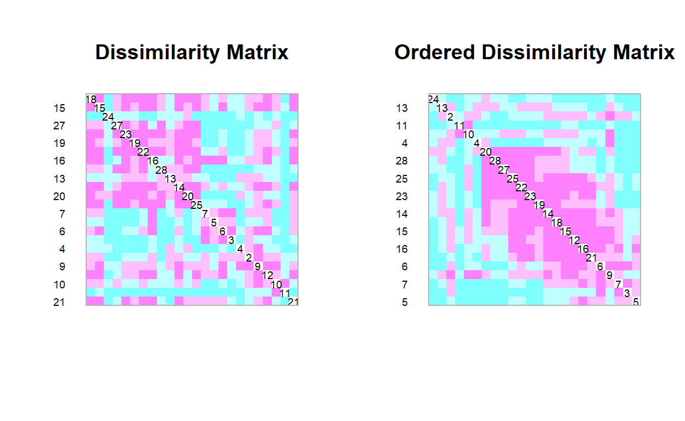
In the untransformed distance matrix, the small differences in abundant species have the same importance as small differences in species with few individuals.
Distance matrices can also be visualized through a network of similarities:
qgraph(1-spe.db, layout='spring', vsize=4)
Note 1: In Q mode similarity from binary data can be interpret by a simple matching coefficient S1: for each pair of sites, it is the ratio between the number of double 1s plus double 0s and the total number of variables.
Note 2: For mixed types variables, including
categorical or qualitative multiclass variables use Gower’s
similarity (S15). It is easily computed in R using
daisy function built in the cluster package.
Avoid vegdist with method='gower', which is
appropriate for quantitative and presence-absence, but not for
multiclass variables. Overall, gowdis from the package
FD is the most complete function to compute Gower’s
coefficient in R, and commonly used in trait-based
approach analyses.
R mode
Correlation type coefficents are commonly used to compare variable in R mode. Remember:
Parametric (Pearson coefficient)
Non-parametric (Spearman, Kendall for quantitative or semi-quantitative data)
Chi-square statistic + its derived forms for qualitative variables
Binary coefficient such as Jaccard, Sorensen, and Ochiai for presence-absence data
…
spe.t <- t(spe)# transpose species matrix
spe.t.chi <- decostand(spe.t,'chi.square') # Chi-square transformation
spe.t.D16 <-dist(spe.t.chi)# euclidean distance
coldiss(spe.t.D16, diag=T) # visualizationqgraph(1-spe.t.D16, layout='spring', vsize=4)
In R mode, the use of Pearson coefficient is very common.
Applied on binary variables, r Pearson is called the
point correlation coefficient. Using the function
panelutils (Borcard et al. (2011):
# Pearson r linear correlation among env. variable
env.pearson <- cor(env) # default method = 'pearson')
env.pearson <- round(env.pearson,2)
# re-order the variables prior to plotting
env.o<-order.single(env.pearson)
# need panelutils () on ceiba
pairs (env[,env.o], lower.panel=panel.smooth, upper.panel=panel.cor,diag.panel=panel.hist, main='Pearson Correlation Matrix')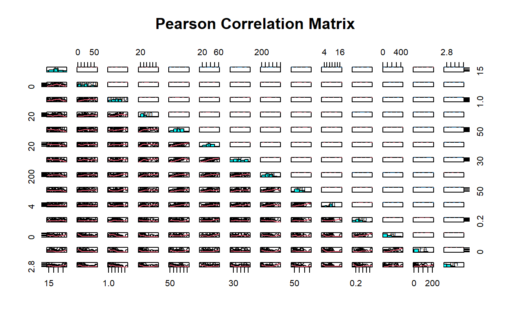
Practice 8.1 Using the tikus data set from
the package mvabund - check ?tikus. Select
observation for the year 1981, 1983, and 1985 only (noted
81, 83 and 85). Build a
Bray-Curtis dissimilarity matrix among selected observations. Plot heat
map of the respective matrix. Build a network of species co-occurrence
(presence/absence) based on your selection of years.
Trees
We often aim to recognize discontinuous subsets in an environment which is represented by discrete (taxonomy) changes but perceived as continuous changes in ecology.
Clustering consists in partitioning the collection of objects (or descriptors in R-mode). Clustering does not test any hypothesis.
Clustering is an explanatory procedure which helps to understand data with complex structure and multivariate relationships, and is a very useful method to extract knowledge and information especially from large datasets.
Many clustering approaches rely on association matrix, which stresses on the importance of the choice of an appropriate association coefficient.
Families
Sequential or Simultaneous algorithms (most of the clustering algorithm)
Agglomerative or Divisive
Monothetic (cluster members with common prop.) versus Polythetic (distance between elements defines membership)
Hierarchical versus Non-hierarchical (flat)
Probabilistic (decision tree) versus non-probabilistic methods
Hard and Soft (may overlap)
Calculate numerical classification often requires two arguments: matrix of distances among samples (ecological resemblance, D) and the method to us e.g.: name of the clustering algorithm.
Common hierarchical clustering methods are available through the
function hclust from the stats package. Be
careful of:
Data dredging clustering produces tree-like structure. You don’t choose clustering method according to how your tree looks like.
The suitable method is usually carefully selected and/or evaluated according to the data set you are dealing with and your initial hypotheses (some may not make sense)
Hierarchical Clustering
- Single linkage agglomerative clustering (neighbor sorting)
Single linkage allows object to agglomerate easily to a group since a link to a single object of the group suffices to induce fusion. This is the ‘closest’ friend’ procedure.
commonly produced chain dendrograms: a pair is linked to a third object
agglomerates objects on the basis of their shortest pairwise distance
partitions difficult to interpret, but gradients quite clear
e.g. Single linkage agglomerative clustering computed on chord distance matrix
# Step 2: single linkage agglomerative clustering
spe.ch.single <-hclust(spe.ch,method='single')
# plot function
plot(spe.ch.single, main='Single linkage agglomerative clustering' ) 
- Complete linkage agglomerative clustering (furthest neighbor sorting)
A group admits a new member only at the distance corresponding to the furthest object of the group: one could say that the admission requires unanimity of the group.
dendrograms look a bit like rakes – some cluster merge together at the highest dissimilarity
allow an object (or a group) to agglomerate with another group only at the distance corresponding to that of the most distant pair of objects
e.g. Complete linkage agglomerative clustering computed on chord distance matrix
spe.ch.complete<-hclust(spe.ch,method='complete')
plot(spe.ch.complete, main='Complete linkage agglomerative clustering') 
Average agglomerative clustering
it is the method the most common in ecology (species data)
this family comprises four methods that are based on average dissimilarities among objects or on the centroids of cluster,

e.g. Average agglomerative clustering (UPGMA) computed on chord distance matrix
spe.ch.UPGMA<-hclust(spe.ch,method='average')
plot(spe.ch.UPGMA, main='Average (UPGMA) agglomerative clustering') 
Ward’s Minimum Variance clustering
Ward method is also a favorite clustering method: Unlike the others. Instead of measuring the distance directly, it analyzes the variance of clusters. Ward’s is said to be the most suitable method for quantitative variables.
it is based on linear model criterion of least square: within-group sum of square is minimized.
Note: Ward method is based on Euclidean model. It should not be combined with distance measures, which are not strictly metric such as the popular Bray-Curtis distance.

Clustering quality
There are many ways to evaluate the overall quality of the chose clustering algorithms and therefore of their representations.
- the cophenetic correlation related distances
extracted from the dendrogram (function
copheneticon ahclustobject) with ditances in our original distance matrices. A higher correlation means a better representation of the initial matrix.
# Single linkage clustering
spe.ch.single.coph <- cophenetic (spe.ch.single)
cor(spe.ch,spe.ch.single.coph)[1] 0.6684868# complete linkage clustering
spe.ch.complete.coph <- cophenetic (spe.ch.complete)
cor(spe.ch,spe.ch.complete.coph)[1] 0.8212132# Average clustering
spe.ch.UPGMA.coph <- cophenetic (spe.ch.UPGMA)
cor(spe.ch,spe.ch.UPGMA.coph)[1] 0.8586625# Ward clustering
spe.ch.ward.coph <- cophenetic (spe.ch.ward)
cor(spe.ch,spe.ch.ward.coph)[1] 0.716064- the shepard-like diagram is a plot that represents orginal distances against the cophentic distances. Can be combined with cophentic correlation seen above.
par(mfrow=c(2,2))
plot(spe.ch,spe.ch.single.coph,xlab='Chord distance',ylab='Chophenetic distance',asp=1, main=c('Single linkage',paste('Cophenetic correlation',round(cor(spe.ch,spe.ch.single.coph),3))))
abline (0,1)
lines(lowess(spe.ch,spe.ch.single.coph),col='red')
plot(spe.ch,spe.ch.complete.coph,xlab='Chord distance',ylab='Chophenetic distance',asp=1, main=c('Complete linkage',paste('Cophenetic correlation',round(cor(spe.ch, spe.ch.complete.coph),3))))
abline (0,1)
lines(lowess(spe.ch, spe.ch.complete.coph),col='red')
plot(spe.ch,spe.ch.UPGMA.coph,xlab='Chord distance',ylab='Chophenetic distance',asp=1, main=c('UPGMA',paste('Cophenetic correlation',round(cor(spe.ch,spe.ch.UPGMA.coph),3))))
abline (0,1)
lines(lowess(spe.ch,spe.ch.UPGMA.coph),col='red')
plot(spe.ch,spe.ch.ward.coph,xlab='Chord distance',ylab='Chophenetic distance',asp=1, main=c('Ward clustering',paste('Cophenetic correlation',round(cor(spe.ch,spe.ch.ward.coph),3))))
abline (0,1)
lines(lowess(spe.ch,spe.ch.ward.coph),col='red')
dev.off()null device
1 Interpretable clustering groups
- Fusion Level values
The plot of the Fusion Level Values is further used a diagnostic of interpretable cluster groups. It examines values where a fusion between two branches of a dendrogram occurs. Specifically, this graph is is useful whenever you want to define an interpretable cutting levels.
plot(spe.ch.UPGMA$height, nrow(spe):2,
type='S',main='Fusion levels - chord - UPGMA',
ylab='k (number of clusters)', xlab='h (node height)', col='grey')
text (spe.ch.UPGMA$height,nrow(spe):2, nrow(spe):2, col='red', cex=0.8)
The graph of fusion level values shows clear jump after each fusion between 2 and 6 groups Let’s cut our dendrogram at the corresponding distance Do the groups makes sense? Do you obtain groups containing a substantial number of sites?
plot(spe.ch.UPGMA)
rect.hclust(spe.ch.UPGMA, k=6) # number of group
rect.hclust(spe.ch.UPGMA, h=0.79) # with height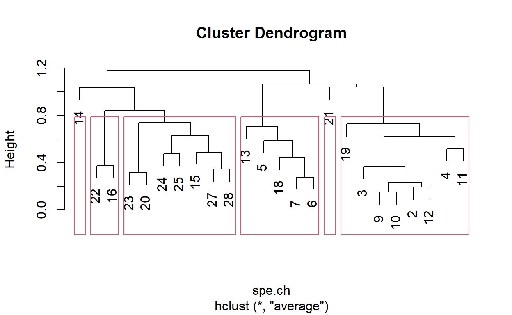
Let’s repeat the same for all the clustering methods:
par(mfrow=c(2,2))
# fusion level - single linkage clustering
plot(spe.ch.single$height,
nrow(spe):2, type='S',main='Fusion levels - chord - single',
ylab='k (number of clusters)', xlab='h (node height)', col='grey')
text (spe.ch.single$height,nrow(spe):2, nrow(spe):2, col='red', cex=0.8)
# fusion level - complete linkage clustering
plot(spe.ch.complete$height,
nrow(spe):2, type='S',main='Fusion levels - chord - complete',
ylab='k (number of clusters)', xlab='h (node height)', col='grey')
text (spe.ch.complete$height,nrow(spe):2, nrow(spe):2, col='red', cex=0.8)
# fusion level - UPGMA clustering
plot(spe.ch.UPGMA$height, nrow(spe):2,
type='S',main='Fusion levels - chord - UPGMA',
ylab='k (number of clusters)', xlab='h (node height)', col='grey')
text (spe.ch.UPGMA$height,nrow(spe):2, nrow(spe):2, col='red', cex=0.8)
# fusion level - the ward clustering
plot(spe.ch.ward$height, nrow(spe):2,
type='S',main='Fusion levels - chord - Ward',
ylab='k (number of clusters)', xlab='h (node height)', col='grey')
text (spe.ch.ward$height,nrow(spe):2, nrow(spe):2, col='red', cex=0.8)
All graphs look a but different: there is no single ‘truth’ among these solution and each may provide insight onto the data. However the Chord UPGMA received the best supported in both the cophenetic correlation and sheppard-like diagram. Therefore, fusion levels may have have a stronger support examined with this cluster approach.
One can compared classification by cutting tree cutree
and comparing grouping using contingency tables:
k<-5 # Number of groups (conscensus)
spe.ch.single.g <- cutree(spe.ch.single, k)
spe.ch.complete.g <- cutree(spe.ch.complete, k)
spe.ch.UPGMA.g <- cutree(spe.ch.UPGMA, k)
spe.ch.ward.g <- cutree(spe.ch.ward, k)
table(spe.ch.single.g,spe.ch.complete.g) # Single vs complete spe.ch.complete.g
spe.ch.single.g 1 2 3 4 5
1 5 7 0 0 0
2 0 1 0 7 0
3 0 0 2 0 0
4 0 0 1 0 0
5 0 0 0 0 1If two classifications provided the same group contents, the contingency table would show only non zero frequency value in each row and each column. It is never the case here.
The Silhouette widths indicator
The silhouette width is a measure of the degree of membership of an object to its cluster based on the average distance between this object and all objects of the cluster to which is belongs, compared to the same measure for the next closest cluster.
Silhouette widths range from 1 to 1 and can be averaged over all objects of a partition
The greater the value is, the greater the better the object is clustered Negative values mean that the corresponding objects have probably placed in the wrong cluster (intra group variation inter group variation).

cutg<-cutree(spe.ch.UPGMA, k=3)
sil<-silhouette (cutg,spe.ch)
plot(sil)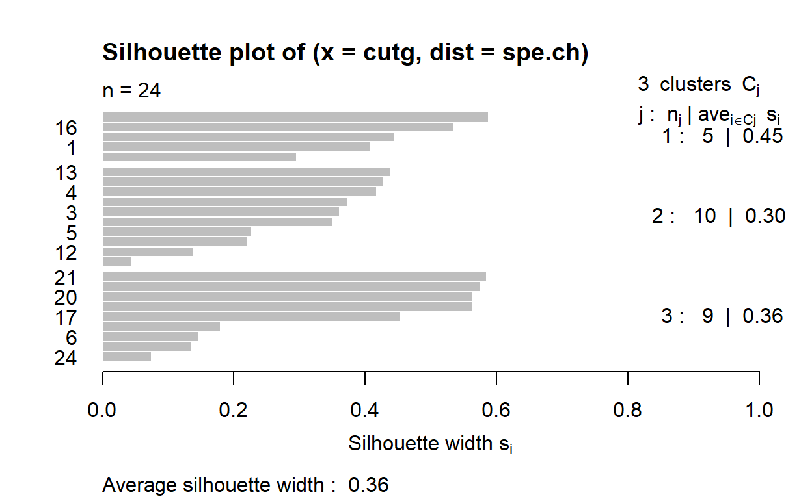
the Elbow method
This method looks at the percentage of variance explained (SS) as a function of the number of cluster
One should choose a number of clusters so that adding another cluster doesn’t give much better explanation
At some point the marginal gain will drop, giving an angle in the graph. The number of clusters is chosen at this point, hence the “elbow criterion” (wss) .
fviz_nbclust(spe.norm, hcut, diss=dist(spe.norm, method='euclidean'),method = "wss",hc_method = "average")
#fviz_nbclust(spe.norm, hcut, diss=dist(spe.norm, method='euclidean'),method = "silhouette",hc_method = "average")The Mantel test
Compares the original distance matrix to (binary) matrices computed from dendrogram cut at various level
Chooses the level where the matrix (correlation between the two is the highest
The Mantel correlation is in its simplest sense, i.e. the equivalent of a Pearson r correlation between the values in the distance matrices
Comparison between the distance matrix and binary matrices representing partitions
## Mantel test
# Optimal number of clusters
# according to mantel statistic
# Function to compute a binary distance matrix from groups
grpdist<-function(x){
require (cluster)
gr<-as.data.frame(as.factor(x))
distgr<-daisy(gr,'gower')
distgr
}
# run based on the UPGMA clustering
kt<-data.frame(k=1:nrow(spe),r=0)
for (i in 2:(nrow(spe)-1)){
gr<-cutree(spe.ch.UPGMA,i)
distgr<-grpdist(gr)
mt<-cor(spe.ch,distgr, method='pearson')
kt[i,2] <- mt
}
k.best <- which.max (kt$r)
plot(kt$k,kt$r,
type='h', main='Mantel-optimal number of clusters - UPGMA',
xlab='k (number of groups)',ylab="Pearson's correlation")
axis(1,k.best,
paste('optimum', k.best, sep='\n'), col='red',font=2, col.axis='red')
points(k.best,max(kt$r),pch=16,col='red',cex=1.5)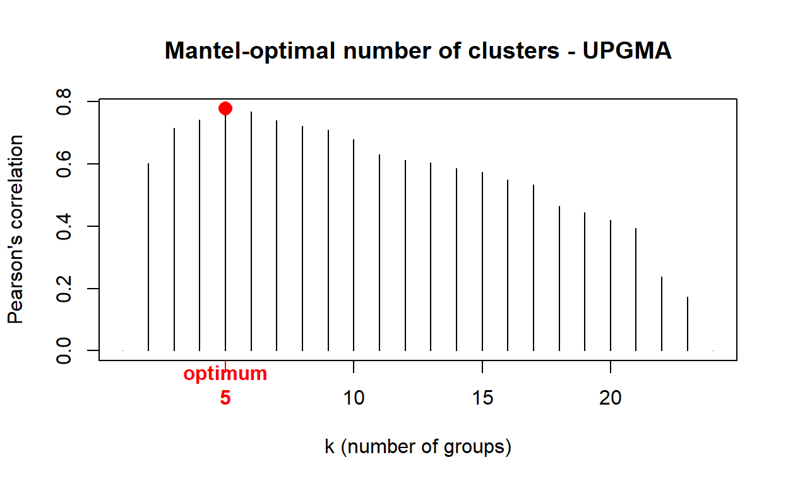
- And many others indicators
See R packages NbClust for determining the relevant
number of clusters in a data set.
Charrad, M., Ghazzali, . N., Boiteau, V., & Niknafs, A. (2014). NbClust: An R Package for Determining the Relevant Number of Clusters in a Data Set. Journal of Statistical Software, 61(6), 1–36. https://doi.org/10.18637/jss.v061.i06
Clustering options
- Visualize groupings
plot(spe.ch.UPGMA, main='Average linkage')
rect.hclust(spe.ch.UPGMA, k=3)
rect.hclust(spe.ch.UPGMA, k=8, border = 'blue')
- Spatial clustering (example)
# note on the of Euclidean distance and Ward.D: SS based clustering
# Bray + UPGMA can be try
# ?doubs
data(doubs)
doubs.spe<-doubs$fish
doubs.spa<-doubs$xy
# remove empty sample 8 from both datasets
doubs.spe <- doubs.spe[-8,]
doubs.spa <- doubs.spa[-8,]
# Calculates hierarchical cluster analysis of species data
eucl.ward <- hclust (d = dist (doubs.spe), method = 'ward.D')
fviz_nbclust(doubs.spe, hcut, diss=dist(doubs.spe, method='euclidean'),method = "wss",hc_method = "single")
# Dendrogram with the observed groups
par(mfrow=c(1,2))
plot (eucl.ward)
rect.hclust (eucl.ward, k = 4, border = 1:4)
# Spatial distribution of samples with projection of hierarchical classification
eucl.ward.cluster <- cutree (eucl.ward, k = 4)
plot (y ~ x, data = doubs.spa, pch = eucl.ward.cluster, col = eucl.ward.cluster, type = 'b', main = 'Euclidean distance - Ward method')
dev.off()null device
1 - Heat map & clustering visualization (example)
We must reorder objects (function reorder.hclust) so
that their order in the dissimilarity matrix is respected . This does
not affect the topology of the dendrogram.
spe.chwo<-reorder.hclust(spe.ch.ward,spe.ch)
dend<-as.dendrogram(spe.chwo)
heatmap(as.matrix(spe.ch),Rowv=dend,symm=TRUE, margin=c(3,3))
Practice 8.2 Using tikus data set and
subset on years 1981, 1983 and 1985: compute the three common clustering
methods (single, complete, average) on a Bray-Curtis dissimilarities
matrix. Compare resulting dendrograms using cophenetic correlation and
Shepard-like diagram. Choose method with the one with the highest
cophenetic correlation and produce a heat map of the reordered distance
matrix together with a visualization of the related dendrogram.
Non-Hierarchical Clustering
(NOTE ON FUZZY - BRIEFLY EXPLAINED BELOW)
Create partition, without hierarchy.
Determine a partition of the objects into k groups, or clusters, such as the objects within each cluster are more similar to one other than to objects in the other clusters.
It require an initial configuration (user usually determine the number of groups, k), which will be optimized in a recursive process (often random). If random, the initial configuration is run a large number of times with different initial configurations in order to find the best solution.
The most known and commonly used non-hierarchical partitioning algorithms is k-means clustering (MacQueen, 1967), in which, each cluster is represented by the center or means of the data points belonging to the cluster.

Three crital steps:
Initialization (various Methods: Lloyd’s algorithm is the most common): k observations from the dataset are used as the initial means. The random partition method first randomly assigns a cluster to each observation and then proceeds to the update step, thus computing the initial mean to be the centroid of the cluster’s randomly assigned points.
Assignment step Assign each observation to the cluster with the nearest mean: that with the least squared Euclidean distance (Mathematically, this means partitioning the observations according to the Voronoi diagram generated by the means)
Update step Recalculate means (centroids) for observations assigned to each cluster.
The algorithm has converged when the assignments no longer change. The algorithm is not always guaranteed to find the optimum.

The algorithm is often presented as assigning objects to the nearest cluster by distance. Using a different distance function other than (squared) Euclidean distance may prevent the algorithm from converging. Various modifications of k-means such as k-medoids [PAM (Partitioning Around Medoids, Kaufman & Rousseeuw, 1990] have been proposed to allow using other distance measures. In this case, cluster is represented by one of the objects in the cluster.
Note: if variable in the data table are not dimensionally homogenous, they must be standardized prior to partitioning
Let’s watch a video to undertand clearly what is K-means clustering: https://www.youtube.com/watch?v=4b5d3muPQmA
If this is not clear, check this video with an example with playing cards (very bad sound quality.
K-means/PAM implementation
The aims is to identify high-density regions in the data. To do so, the method iteratively minimizes an objective function the total error sum of squares (TESS or SSE), which is the sum of the within groups sums-of squares. It is basically the sum, over the k groups, of the sums of squared distance among the objects in the group, each divided by the number of objects in the group.

With a pre-determined number of groups, recommended function is:
kmeans from the stats package. Argument
nstart will repeat the analysis a large number of time
using different initial configuration until finding the best
solution.
Note: do not forget to normalized your data
# k-means partitioning of the pre-transformed species data
spe.kmeans <- kmeans(spe.norm, centers=5, nstart=100)
# k-means group number of each observation spe.kmeans$cluster
spe.kmeans$cluster18 15 24 27 23 19 22 16 28 13 14 20 25 7 5 6 3 4 2 9 12 10 11
5 3 3 3 1 4 2 2 3 5 2 1 3 5 5 5 4 4 4 4 4 4 4
21
1 # Comparison with the 5-group classification derived from UPGMA clustering
comparison<-table(spe.kmeans$cluster,spe.ch.UPGMA.g)
comparison spe.ch.UPGMA.g
1 2 3 4 5
1 0 2 0 0 1
2 0 2 0 1 0
3 0 5 0 0 0
4 0 0 8 0 0
5 5 0 0 0 0# Visualize k-means clusters
fviz_cluster(spe.kmeans, data = spe.norm,geom = "point",
stand = FALSE, ellipse.type = "norm") 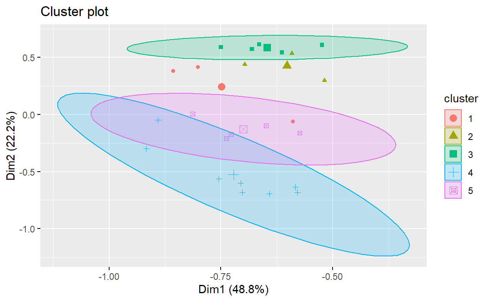
Best partition
Evaluating partition is made using similar indicators than above (note: some may only apply to hierarchical or non-hierarchical clustering). Next are elbow and silhouette indicators:
# elbow, UPGMA, chord
fviz_nbclust(spe.norm, hcut, diss=dist(spe.norm, method='euclidean'),method = "wss",hc_method = "average")
# silhouette, UPGMA, chord
fviz_nbclust(spe.norm, hcut, diss=dist(spe.norm, method='euclidean'),method = "silhouette",hc_method = "average")# elbow, kmeans, chord
fviz_nbclust(spe.norm, kmeans, method = "wss")# silhouette, kmeans, chord
fviz_nbclust(spe.norm, kmeans, method = "silhouette")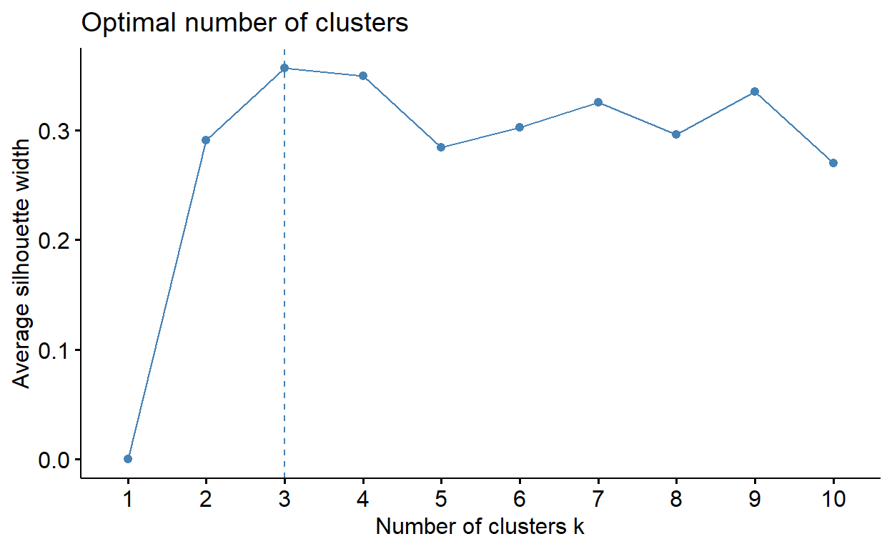
The function cascadeKM in vegan package is
a wrapper for the kmeans function
creates several partitions forming a cascade from small (argument
inf.grto large values of k (argumentsup.gr)the cascade proposes the ‘best solution’ for partitioning using the
calinskiorssicriterion
spe.KM.cascade<-cascadeKM(spe.norm,inf.gr=2,sup.gr=10,iter=100,criterion='calinski')
plot(spe.KM.cascade,sortg=TRUE)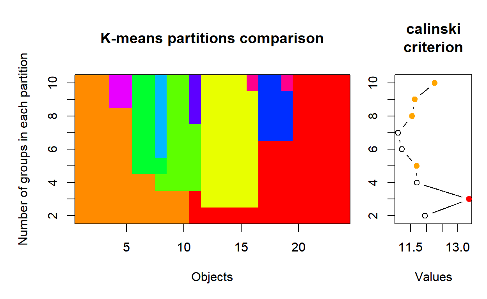
For pam clustering (package cluster):
fviz_nbclust (spe.norm , pam, method = "silhouette") 
fviz_nbclust (spe.norm , pam, method = "wss")
pamk(spe.norm, krange=2:10, criterion='asw')$nc[1] 6pam6<-pam(spe.norm, 6)
pam3<-pam(spe.norm, 3)
plot(silhouette(pam6))plot(silhouette(pam3))# plot1<-fviz_nbclust(spe.norm, hcut, method = "silhouette", hc_method = "average")
# plot2 < - fviz_nbclust (spe.norm , pam, method = "silhouette")
# plot3<-fviz_nbclust(spe.norm, kmeans, method = "silhouette")
# grid.arrange(plot1, plot2,plot3, ncol=3)Visualize the partitions:
pam.res<-pam(spe.norm, k=6)
km.res <- kmeans(spe.norm, centers=3)
plot4 <-fviz_cluster(km.res,spe.norm, stand = FALSE,geom = "point",ellipse.type = "norm")
plot5 <-fviz_cluster(pam.res,spe.norm, stand = FALSE,geom = "point",ellipse.type = "norm")
grid.arrange(plot4, plot5, ncol=2)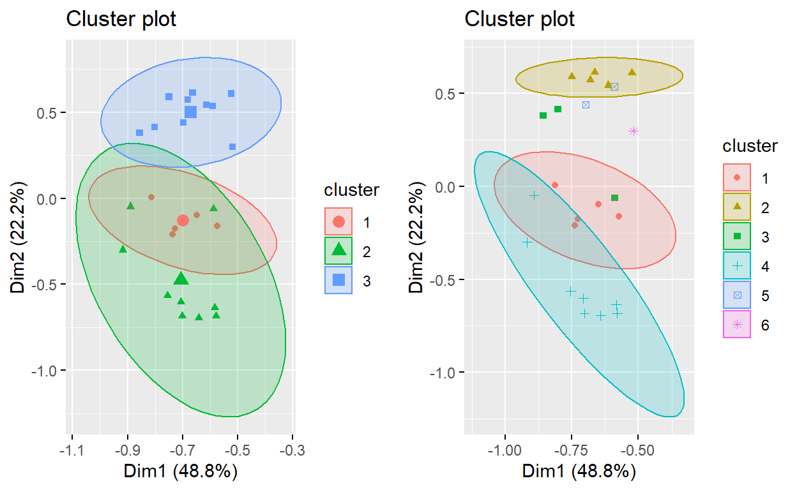
Fuzzy clustering
The fuzzy clustering is considered as soft clustering or soft k-means, in which each element has a probability of belonging to each cluster. In other words, each element has a set of membership coefficients corresponding to the degree of being in a given cluster. In fuzzy clustering, points close to the center of a cluster, may be in the cluster to a higher degree than points in the edge of a cluster. The degree, to which an element belongs to a given cluster, is a numerical value varying from 0 to 1.
This is fundamnetally different from k-means and k-medoid clustering, where each object is affected exactly to one cluster. k-means and k-medoids clustering are known as hard or non-fuzzy clustering.
In other words, in non-fuzzy clustering an apple can be red or green (hard clustering). Here, the apple can be red AND green (soft clustering). The apple will be red to a certain degree [red = 0.5] as well as green to a certain degree [green = 0.5].
The fuzzy c-means (FCM) algorithm is one of the most
widely used fuzzy clustering algorithms. The centroid of a cluster is
calculated as the mean of all points, weighted by their degree of
belonging to the cluster. The function fanny
[cluster package] can be used to compute fuzzy clustering.
‘FANNY’ stands for fuzzy analysis clustering.
set.seed(123)
res.fanny<-fanny(spe.norm, 3)
fviz_cluster(res.fanny, ellipse.type = "norm", repel = TRUE,
palette = "jco", ggtheme = theme_minimal(),
legend = "right")res.fanny # details on membershipFuzzy Clustering object of class 'fanny' :
m.ship.expon. 2
objective 3.792824
tolerance 1e-15
iterations 194
converged 1
maxit 500
n 24
Membership coefficients (in %, rounded):
[,1] [,2] [,3]
18 45 33 21
15 35 49 16
24 35 44 20
27 34 48 18
23 39 44 18
19 33 34 33
22 36 43 21
16 38 42 20
28 34 45 21
13 41 32 27
14 39 38 24
20 40 43 17
25 34 47 18
7 45 32 23
5 42 32 26
6 44 31 25
3 20 17 63
4 31 24 45
2 15 13 72
9 18 16 66
12 15 13 72
10 16 14 70
11 33 28 39
21 36 34 30
Fuzzyness coefficients:
dunn_coeff normalized
0.39226789 0.08840183
Closest hard clustering:
18 15 24 27 23 19 22 16 28 13 14 20 25 7 5 6 3 4 2 9 12 10 11
1 2 2 2 2 2 2 2 2 1 1 2 2 1 1 1 3 3 3 3 3 3 3
21
1
Available components:
[1] "membership" "coeff" "memb.exp" "clustering"
[5] "k.crisp" "objective" "convergence" "diss"
[9] "call" "silinfo" "data" fviz_silhouette(res.fanny, palette = "jco",
ggtheme = theme_minimal()) cluster size ave.sil.width
1 1 7 0.17
2 2 10 0.30
3 3 7 0.57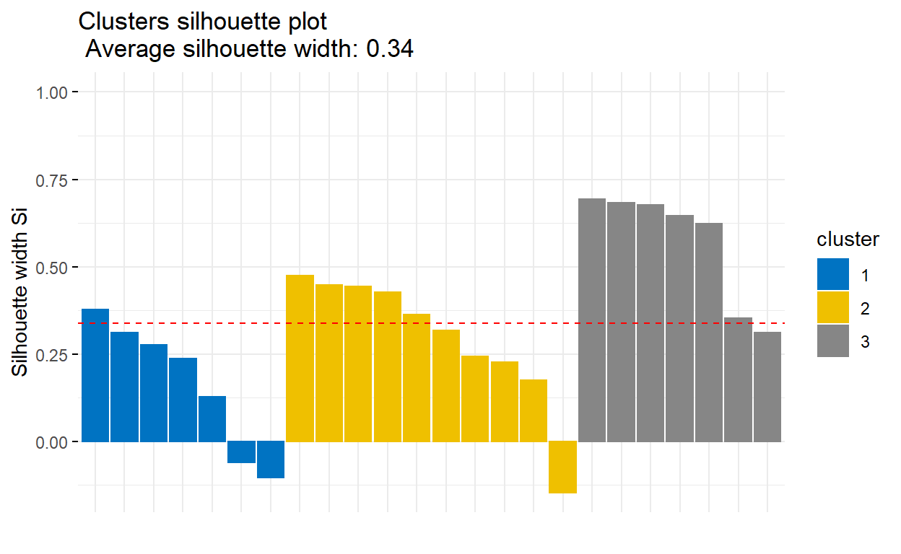
Another example using the function cmeans from the
package e1071 and a dataset on the criminality in
USArrests
set.seed(123)
# Load the data
data("USArrests")
# Subset of USArrests
ss <- sample(1:50, 20)
df <- scale(USArrests[ss,])
# Compute fuzzy clustering
cm <- cmeans(df, 4)
# Visualize using corrplot
corrplot(cm$membership, is.corr = FALSE)
using our Doubs dataset

Practice 8.3 Using iris data set: (1) make
a K-means cascade and use the silhouette width indicator to determine
the optimal number of clusters. (2) since we know that 3 species are
involved, group the data into 3 clusters (common sense) using the
kmeans function. How many points are wrongly classified
between optimal in (1) and the solution here? Plot both solutions.
my_cols <- c("#00AFBB", "#E7B800", "#FC4E07")
pairs(iris[,1:4], pch = 19, cex = 0.5,
col = my_cols[iris$Species],
lower.panel=NULL)
Show Solution
fviz_nbclust(iris[, 1:4], kmeans, method = "silhouette")
spe.KM.cascade<-cascadeKM(iris[,1:4],inf.gr=2, sup.gr=10, iter=100, criterion='calinski')
plot(spe.KM.cascade,sortg=TRUE)
set.seed(1)
irisCluster<-kmeans(iris[, 1:4], 3, nstart= 20)
table(irisCluster$cluster, iris$Species)
irisCluster$cluster<-as.factor(irisCluster$cluster)
plot7<-ggplot(iris, aes(Petal.Length, Petal.Width, color = irisCluster$cluster + geom_point()
plot8<-ggplot(iris, aes(Petal.Length, Petal.Width, color = Species)) + geom_point()
grid.arrange(plot7, plot8, ncol=2)Decision trees
Here for a basic understanding of decision trees:
Classification And Regression Trees (CART)
The functions tree and ctree builds
decision trees (recursive
partitioning algorithm). The first parameter is a formula, which
defines a target variable and a list of independent variables.
tree1<-tree(Species~Sepal.Length + Sepal.Width + Petal.Length + Petal.Width, data=iris)
summary(tree1 )
Classification tree:
tree(formula = Species ~ Sepal.Length + Sepal.Width + Petal.Length +
Petal.Width, data = iris)
Variables actually used in tree construction:
[1] "Petal.Length" "Petal.Width" "Sepal.Length"
Number of terminal nodes: 6
Residual mean deviance: 0.1253 = 18.05 / 144
Misclassification error rate: 0.02667 = 4 / 150 
Another fancier option with the package rpart:
tree2 <- rpart(Species ~ ., data=iris, method="class")
fancyRpartPlot(tree2, main="Iris")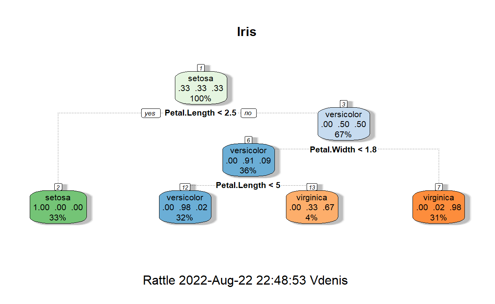
One of the disadvantages of decision trees may be overfitting i.e. continually creating partitions to achieve a relatively homogeneous population. This problem can be alleviated by pruning the tree (CART), which is basically removing the decisions from the bottom to up. Another way is to combine several trees and obtain a consensus, which can be done via a process called random forests (bootstrapped version of CART - many trees built based on subsets of the data, in addition not all predictor variables are used every time, rather a random subset). [HOME]
# Extra to exciting your curiosity
iris.rf=randomForest(Species~., data=iris, importance=TRUE, proximity=TRUE, ntree=500)
# Required number of trees gives errors for each species and the average for all species (black):
plot(iris.rf,lty=2)
# Misclassification error rates:
iris.rf$confusion setosa versicolor virginica class.error
setosa 50 0 0 0.00
versicolor 0 47 3 0.06
virginica 0 4 46 0.08# Importance of individual predictor variables for classification (the further the value is on the right of the plot, the more important):
varImpPlot(iris.rf)
# The membership of a particular class as a function of a variable value can be displayed with this
partialPlot(iris.rf,iris,Petal.Width,"setosa")
# we can predict unclassified observations. We make up some sample new observations from the original dataset to save some time importing (the first three rows are P. setosa, lets see if RandomForest gets that right:
newobs=iris[1:3,1:4]
predict(iris.rf,newobs) 1 2 3
setosa setosa setosa
Levels: setosa versicolor virginica# This last plot conveys the confidence in your predictions for each individual sample. Colors represent species and points are samples. In this case, many samples can be predicted with great certainty (1) and only few classifications are questionable (approaching 0)
plot(margin(iris.rf))
Multivariate Regression Trees: constrained clustering [HOME]
Multivariate regression trees (MRT; De’ath 2002) are an extension of univariate regression trees, a method allowing the recursive partitioning of a quantitative response variable under the control of a set of quantitative or categorical explanatory variables (Breiman et al. 1984). Such a procedure is sometimes called constrained or supervised clustering.The result is a tree whose “leaves” (terminal groups of sites) are composed of subsets of ‘sites’ chosen to minimize the within-group sums of squares (as in a k-means clustering), but where each successive partition is defined by a threshold value or a state of one of the explanatory variables.
The only package implementing a complete and handy version of MRT is
mvpart. Unfortunately, this package is no longer supported
by the R Core Team, so that no updates are available for R versions
posterior to R 3.0.3. Nevertheless, mvpart can still be
installed via github.
data(doubs)
spe.norm<-decostand(doubs$fish[-8,], 'nor')
env<-doubs$env[-8,]
# par(mfrow=c(1,2))
spe.ch.mvpart <-
mvpart(data.matrix(spe.norm)~.,
env,
margin = 0.08,
cp=0,
xv='min', # try 'pick' best number, '1se'
xval=nrow(spe),
xvmult = 100
)X-Val rep : 1 2 3 4 5 6 7 8 9 10 11 12 13 14 15 16 17 18 19 20 21 22 23 24 25 26 27 28 29 30 31 32 33 34 35 36 37 38 39 40 41 42 43 44 45 46 47 48 49 50 51 52 53 54 55 56 57 58 59 60 61 62 63 64 65 66 67 68 69 70 71 72 73 74 75 76 77 78 79 80 81 82 83 84 85 86 87 88 89 90 91 92 93 94 95 96 97 98 99 100
Minimum tree sizes
tabmins
2 3 4 5 6 8 9 10 11
3 7 4 1 2 22 15 40 6 
Hello World to Machine Learning [HOME]
Create a Validation Dataset We will split
iris dataset into two, 80% of which we will use to train
our models and 20% that we will hold back as a validation dataset.
# create a list of 80% of the rows in the original dataset that we can use for training
validation_index <- createDataPartition(iris$Species, p=0.80, list=FALSE)
# select 20% of the data for validation
validation <- iris[-validation_index,]
# use the remaining 80% of data to training and testing the models
idataset <- iris[validation_index,]You now have training data in the dataset variable and a validation set we will use later in the validation variable.
Evaluate Algorithm it is time to create some models of the data and estimate their accuracy on unseen data.
- Step 1: set-up the test harness to use 10-fold cross validation. We will 10-fold crossvalidation to estimate accuracy.This will split our dataset into 10 parts, train in 9 and test on 1 and release for all combinations of train-test splits. We will also repeat the process 3 times for each algorithm with different splits of the data into 10 groups, in an effort to get a more accurate estimate
# Run algorithms using 10-fold cross validation
control <- trainControl(method="cv", number=10)
metric <- "Accuracy"We are using the metric of “Accuracy” to evaluate models. This is a ratio of the number of correctly predicted instances in divided by the total number of instances in the dataset multiplied by 100 to give a percentage (e.g. [XX]% accurate). We will be using the metric variable when we run build and evaluate each model next.
Step 2: Build Models. We don’t know which algorithms would be good on this problem or what configurations to use, let’s evaluate 3 different algorithms:
- Classification and Regression Trees (CART) - non linear algorithm
- k-Nearest Neighbors (kNN) - non linear algorithm
- Linear Discriminant Analysis (LDA) - linear algorithm
- Random Forest (RF) - advanced algorithms
# lda
set.seed(10)
fit.lda <- train(Species~., data=idataset, method="lda", metric=metric, trControl=control)
# CART
set.seed(10)
fit.cart <- train(Species~., data=idataset, method="rpart", metric=metric, trControl=control)
# kNN
set.seed(10)
fit.knn <- train(Species~., data=idataset, method="knn", metric=metric, trControl=control)
# Random Forest
set.seed(10)
fit.rf <- train(Species~., data=idataset, method="rf", metric=metric, trControl=control)- Step 3: Build Models. We don’t know which algorithms would be good on this problem or what configurations to use, let’s evaluate 3 different algorithms:
We now have 4 models and accuracy estimations for each. We need to compare the models to each other and select the most accurate.
We can report on the accuracy of each model by first creating a list of the created models and using the summary function.
# summarize accuracy of models
results <- resamples(list(lda=fit.lda, cart=fit.cart, knn=fit.knn, rf=fit.rf))
summary(results)$statistics$Accuracy Min. 1st Qu. Median Mean 3rd Qu. Max. NA's
lda 0.9166667 1.0000000 1.0000000 0.9916667 1 1 0
cart 0.7500000 0.9166667 0.9583333 0.9416667 1 1 0
knn 0.8333333 1.0000000 1.0000000 0.9750000 1 1 0
rf 0.7500000 0.9166667 1.0000000 0.9500000 1 1 0We can see that the most accurate model in this case was LDA:
# summarize Best Model
print(fit.lda)Linear Discriminant Analysis
120 samples
4 predictor
3 classes: 'setosa', 'versicolor', 'virginica'
No pre-processing
Resampling: Cross-Validated (10 fold)
Summary of sample sizes: 108, 108, 108, 108, 108, 108, ...
Resampling results:
Accuracy Kappa
0.9916667 0.9875This gives a nice summary of what was used to train the model and the mean and standard deviation (SD) accuracy achieved, specifically XX.X% accuracy +/- X%
Prediction
The LDA was the most accurate model. Now we want to get an idea of the accuracy of the model on our validation set.
This will give us an independent final check on the accuracy of the best model. It is valuable to keep a validation set just in case you made a slip during such as overfitting to the training set or a data leak. Both will result in an overly optimistic result.
We can run the LDA model directly on the validation set and summarize the results in a confusion matrix.
# estimate skill of LDA on the validation dataset
predictions <- predict(fit.lda, validation)
confusionMatrix(predictions, validation$Species)Confusion Matrix and Statistics
Reference
Prediction setosa versicolor virginica
setosa 10 0 0
versicolor 0 9 1
virginica 0 1 9
Overall Statistics
Accuracy : 0.9333
95% CI : (0.7793, 0.9918)
No Information Rate : 0.3333
P-Value [Acc > NIR] : 8.747e-12
Kappa : 0.9
Mcnemar's Test P-Value : NA
Statistics by Class:
Class: setosa Class: versicolor Class: virginica
Sensitivity 1.0000 0.9000 0.9000
Specificity 1.0000 0.9500 0.9500
Pos Pred Value 1.0000 0.9000 0.9000
Neg Pred Value 1.0000 0.9500 0.9500
Prevalence 0.3333 0.3333 0.3333
Detection Rate 0.3333 0.3000 0.3000
Detection Prevalence 0.3333 0.3333 0.3333
Balanced Accuracy 1.0000 0.9250 0.9250We can see that the accuracy is XXX%. It was a small validation dataset (20%), but this result is within our expected margin of XX% +/-X% (Accuracy +/- SD of lda model) suggesting we may have an accurate and a reliably accurate model.
See more https://machinelearningmastery.com/machine-learning-in-r-step-by-step/
Basically, we learn about one neurone of a network. You are only one step toward Deep Learning.

Ordinations
Background
GUSTA ME provides a guide to statistical analysis (community-focused) in Microbial Ecology. Very useful to help in the choice of the relevant analysis according to the type of data you are dealing with.
Multidimensional space
The aim of ordination methods is to represent the data along a reduced number of orthogonal axes, constructed in such way that they represent, in decreasing order, the main trends of the data
The renders can be interpreted visually or in association with other methods such as clustering or regression
Most ordination methods (except nMDS) are based on the extraction of the eigenvectors of an association matrix
Families
Two big families of ordination analyses exist according to how they are dealing with environmental matrix (if any):
unconstrained ordination (indirect gradient analysis, ordination not constrained by environmental factors).They are descriptive methodologies and describe patterns. It generates hypotheses but cannot test them.
uncover main compositional gradients in the species data, structuring the community, and these gradients can be interpreted by known (estimated or measured) environmental factors
environmental variables can be used a posteriori, after the analysis
constrained ordination (direct gradient analysis, ordination axes are constrained by environmental factors). It tests directly hypotheses about the influence of environmental factors on species composition*
relates the species composition directly to the environmental variables and extracts the variance in species composition which is directly related to these variable*
regarding environmental factors, it offers several interesting options such as step-wise selection of important environmental variables (and excluding those which are not relevant for species composition), test of significance of the variance explained by environmental factors and partitioning variance explained by particular environmental variables
Types
In addition, based on data input, two types of ordination analyses exist.
raw data: based on analysis of raw sample-species matrices with abundance or presence/absence data. Two categories recognized, differing by assumption of species response along environmental gradient:
linear, species response linearly along env. gradient, which could be true for rather homogenous ecological data, where ecological gradients are not too long. Short gradient.
unimodal, species response unimodally along gradient, having its optima at certain gradient position. More close to reality of ecological data, more suitable for heterogenous dataset (long gradients + many zeros and turnover). Long gradient.

- distances: distance matrix computed by similarity/dissimilarity measures, and projecting these distances into two or more dimensional diagrams
Framework

The selection toward linear or unimodal ordination appraoch is
commonly determined by a rule of thumb by performing a Detrended
Correspondance Analysis (DCA) decorana on the dataset, then
to check the length of the 1st DCA axis. Typically, it says:
length>4, data are heterogenous and you should use unimodal methods
length<3, data are homogenous and you should use linear methods
There is a grey zone between 3 and 4 where both methods are okay - in addition if your data are heterogenous, you still can use PCA/RDA using Hellinger’s transformation of species data* (tbPCA)
Call:
decorana(veg = varespec)
Detrended correspondence analysis with 26 segments.
Rescaling of axes with 4 iterations.
DCA1 DCA2 DCA3 DCA4
Eigenvalues 0.5235 0.3253 0.20010 0.19176
Decorana values 0.5249 0.1572 0.09669 0.06075
Axis lengths 2.8161 2.2054 1.54650 1.64864
Call:
decorana(veg = doubspec)
Detrended correspondence analysis with 26 segments.
Rescaling of axes with 4 iterations.
DCA1 DCA2 DCA3 DCA4
Eigenvalues 0.538 0.1964 0.08759 0.17777
Decorana values 0.601 0.1283 0.06111 0.03293
Axis lengths 3.855 1.4672 2.39227 1.79048Unconstrained ordination
Principal Component Analysis (PCA): the main eigenvector-based method (and the most famous). Works on raw, quantitative data. Preserve the Euclidean distance among sites.
Correspondance Analysis (CA): works on data that must be frequency or frequency-like, dimensionnally homogenous, and non-negative. Preserve the Chi-square distance among rows and columns. Applied in ecology to analyze species data.
Principal Coordinate Analysis (PCoA, also called MDS): devoted to the ordination of distance matrix, most often in Q mode. Great flexibility in the choice of association measures. Common in trait-based approach because of it.
non-metric Multi-Dimensional Scaling (nMDS) unlike the three others, this is not an eigenvector-based method. nMDS tries to represent the set of objects along a predetrmined number of axes (usually 2) while preserving the ordering relationship among them.
Principal Component Analysis (PCA)
A PCA carries out a rotation system of axes defined by the variables, such as new axes (called principal component) are orthogonal to one another, and correspond to the successive dimensions of maximum variance of the scatter plot.
A PCA will find the “best” line (first principal component) according to two different criteria of what is the “best”: maximize the variance & minimize the error.
Applied to a 2D example on wine testing, this is like to identify a new property of wine by a combination of two variables (alcohol content and wine darkness) by drwaing a line through the center of the wine cloud.

 It corresponds to a
simple application of the Pythagora theorem
It corresponds to a
simple application of the Pythagora theorem

The direction is given by eigenvector, and the strength by the eigenvalues.

Check it here for a very simple explanation of how PCA works, and here for a a more detailed example. By the way TileStats channel is very good if you are looking at some simple explanation about statistics. It complements very well StatQuest explanation on PCA for
PCA in R
Computation
In R, a PCA can be computed with the function
rda from the veganamong many other
options.
# PCA on on the full data varechem dataset
# arg scale =T, standardize our variables within the rda function
data(varechem)
env<-varechem
env.pca<-rda(env, scale=T)
env.pcaCall: rda(X = env, scale = T)
Inertia Rank
Total 14
Unconstrained 14 14
Inertia is correlations
Eigenvalues for unconstrained axes:
PC1 PC2 PC3 PC4 PC5 PC6 PC7 PC8 PC9 PC10 PC11
5.192 3.193 1.686 1.069 0.816 0.706 0.436 0.369 0.171 0.150 0.085
PC12 PC13 PC14
0.070 0.035 0.024 summary(env.pca) # default scaling 2
Call:
rda(X = env, scale = T)
Partitioning of correlations:
Inertia Proportion
Total 14 1
Unconstrained 14 1
Eigenvalues, and their contribution to the correlations
Importance of components:
PC1 PC2 PC3 PC4 PC5 PC6
Eigenvalue 5.1916 3.1928 1.6855 1.06899 0.81599 0.70581
Proportion Explained 0.3708 0.2281 0.1204 0.07636 0.05829 0.05042
Cumulative Proportion 0.3708 0.5989 0.7193 0.79564 0.85392 0.90434
PC7 PC8 PC9 PC10 PC11 PC12
Eigenvalue 0.43641 0.36884 0.1707 0.14953 0.08526 0.06986
Proportion Explained 0.03117 0.02635 0.0122 0.01068 0.00609 0.00499
Cumulative Proportion 0.93551 0.96185 0.9740 0.98473 0.99082 0.99581
PC13 PC14
Eigenvalue 0.035057 0.023615
Proportion Explained 0.002504 0.001687
Cumulative Proportion 0.998313 1.000000
Scaling 2 for species and site scores
* Species are scaled proportional to eigenvalues
* Sites are unscaled: weighted dispersion equal on all dimensions
* General scaling constant of scores: 4.236078
Species scores
PC1 PC2 PC3 PC4 PC5 PC6
N 0.2441 0.2516 -0.23818 0.92846 -0.359554 0.30319
P -0.9181 -0.4194 0.13356 0.09649 0.224909 0.07938
K -0.9369 -0.3272 -0.06261 0.25051 0.180899 -0.28683
Ca -0.9280 -0.1711 0.47982 -0.02138 -0.241479 -0.09536
Mg -0.9087 -0.1978 0.12446 -0.04430 -0.497428 -0.10781
S -0.8576 -0.6002 -0.31620 -0.01652 0.071629 -0.08779
Al 0.2980 -0.9720 -0.39009 0.09092 0.005386 -0.19467
Fe 0.5236 -0.7748 -0.23063 0.37187 -0.023377 -0.32292
Mn -0.7418 0.3908 0.13114 0.44346 0.501064 0.06776
Zn -0.8926 -0.3277 0.06142 -0.06121 -0.153677 0.51653
Mo -0.1072 -0.4625 -0.85720 -0.27258 -0.030063 0.39721
Baresoil -0.4218 0.6387 -0.40089 -0.07389 -0.416610 -0.31060
Humdepth -0.6070 0.6825 -0.41674 0.02975 -0.047738 -0.15923
pH 0.4286 -0.6517 0.66384 0.07599 -0.265374 0.05070
Site scores (weighted sums of species scores)
PC1 PC2 PC3 PC4 PC5 PC6
18 0.05126 0.84085 -0.190142 -0.40431 0.101518 -1.01997
15 0.20452 0.37397 0.002978 -1.06030 1.175734 -0.92257
24 -1.53647 -1.25830 -0.012170 -0.86690 -1.854372 1.74375
27 -1.25643 0.51345 0.743928 0.63835 1.097881 0.15631
23 -0.71203 0.86247 -0.203389 -0.05971 -0.786196 -0.80080
19 -0.76179 0.73785 -0.761645 -0.31728 -1.303297 -0.62264
22 -0.30340 0.86304 0.188484 0.54758 -0.078064 0.24567
16 0.62797 0.76436 -0.124301 -0.26047 0.009044 -0.02807
28 -1.13923 0.44909 0.229104 1.61582 0.842871 0.60852
13 -0.62483 -0.85407 -1.259755 1.38195 -0.157593 -1.04794
14 -0.04206 0.60916 -0.719743 -0.73109 -0.230147 0.25505
20 -0.93747 0.20753 -0.689713 0.62198 -0.282188 0.33232
25 -0.34451 0.90128 0.710714 0.64127 1.214897 0.48173
7 1.50502 -0.22114 -0.495604 0.87068 -0.769266 -0.25733
5 1.40889 0.60035 0.911463 0.71133 -0.488111 2.45195
6 1.30776 0.03604 -0.243884 -0.87792 0.543259 0.46876
3 1.64967 -0.82755 -0.343406 1.40028 -0.546374 -0.19580
4 -0.26711 -1.65198 -1.744251 -0.60763 0.947492 0.46203
2 0.59653 -1.21610 -0.200030 0.72815 0.799208 -0.76013
9 0.03271 -0.69445 -0.350028 -1.35247 0.717140 0.82965
12 0.47944 0.26377 0.184677 -1.27744 0.573929 0.07253
10 -0.32993 -0.95483 1.670469 -0.51343 0.819138 -0.48682
11 -0.09921 -1.52318 2.493913 -0.09044 -1.092296 -1.10654
21 0.49069 1.17838 0.202333 -0.73801 -1.254205 -0.85966Inertia: in vegan’s language, this is
the general term for “variation” in the data
Constrained and unconstrained: In PCA, the analysis is unconstrained, i.e. not constrained by a set of explanatory variables, and so are the results
Eigenvalues, symbolized λj: these are measures of the importance (variance) of the PCA axes. They can be expressed as Proportions Explained, or proportions of variation accounted for by the axes, by dividing each eigenvalue by the “total inertia”.
Scaling: not to be confused with the argument “scale” calling for standardization of variables. “Scaling” refers to the way ordination results are projected in the reduced space for graphical display. There is no single way of optimally displaying objects and variables together in a PCA biplot, i.e., a plot showing two types of results, here the sites and the variables. Two main types of scaling are generally used. Each of them has properties that must be kept in mind for proper interpretation of the biplots. Here we give the essential features of each scaling. Please refer to Legendre and Legendre (2012) for a complete desciption.
Scaling 1 = distance biplot: the eigenvectors are scaled to unit length. (1) Distances among objects in the biplot are approximations of their Euclidean distances in multidimensional space. (2) The angles among descriptor vectors do not reflect their correlations.
Scaling 2 = correlation biplot: each eigenvector is scaled to the square root of its eigenvalue. (1) Distances among objects in the biplot are not approximations of their Euclidean distances in multidimensional space. (2) The angles between descriptors in the biplot reflect their correlations.
The compromise Scaling 3 has no clear interpretation rules, and therefore we will not discuss it further.
Bottom line: if the main interest of the analysis is to interpret the relationships among objects, choose scaling 1. If the main interest focuses on the relationships among descriptors, choose scaling 2.
# Plots using biplot
# To help memorize the meaning of the scalings, vegan now accepts argument scaling = "sites" for scaling 1 and scaling="species" for scaling 2. This is true for all vegan functions involving scalings
par(mfrow = c(1, 2))
biplot(env.pca, scaling = 1, main = "PCA - scaling 1")
biplot(env.pca, main = "PCA - scaling 2") # Default scaling 2
# Plots using cleanplot.pca
cleanplot.pca(env.pca)
dev.off()null device
1 Species scores: coordinates of the arrowheads of the
variables. For historical reasons, response variables are always called
“species” in vegan, no matter what they represent, because
vegan is built for vegetation analysis.
summary(env.pca)$species PC1 PC2 PC3 PC4 PC5
N 0.2440979 0.2515733 -0.23818234 0.92845641 -0.359553527
P -0.9180524 -0.4193826 0.13356210 0.09648767 0.224909353
K -0.9368729 -0.3271677 -0.06260980 0.25051247 0.180899487
Ca -0.9280154 -0.1710871 0.47981561 -0.02137797 -0.241479006
Mg -0.9087391 -0.1977676 0.12445939 -0.04429598 -0.497428380
S -0.8576285 -0.6001923 -0.31619893 -0.01651531 0.071628806
Al 0.2979981 -0.9719998 -0.39009263 0.09092398 0.005385911
Fe 0.5236461 -0.7748245 -0.23063499 0.37187022 -0.023377408
Mn -0.7417951 0.3908124 0.13113707 0.44346463 0.501064410
Zn -0.8926155 -0.3276820 0.06141777 -0.06121484 -0.153676876
Mo -0.1071693 -0.4625158 -0.85719968 -0.27258226 -0.030062540
Baresoil -0.4217537 0.6386581 -0.40088872 -0.07388829 -0.416609754
Humdepth -0.6070224 0.6824708 -0.41673807 0.02975285 -0.047737672
pH 0.4285669 -0.6517311 0.66384419 0.07599465 -0.265373616
PC6
N 0.30318540
P 0.07938380
K -0.28683242
Ca -0.09536341
Mg -0.10781462
S -0.08778905
Al -0.19467254
Fe -0.32291739
Mn 0.06775658
Zn 0.51653200
Mo 0.39721211
Baresoil -0.31059907
Humdepth -0.15923057
pH 0.05070435Site scores: coordinates of the sites in the ordination diagram. Objects are always called “Sites” in vegan output files.
summary(env.pca)$site PC1 PC2 PC3 PC4 PC5
18 0.05125774 0.84085141 -0.190142229 -0.40430510 0.101517981
15 0.20451664 0.37396845 0.002978186 -1.06030207 1.175734141
24 -1.53646532 -1.25829807 -0.012169567 -0.86689800 -1.854371921
27 -1.25642818 0.51344912 0.743928187 0.63834616 1.097880596
23 -0.71203013 0.86246533 -0.203389168 -0.05971047 -0.786196338
19 -0.76179163 0.73785383 -0.761645009 -0.31728175 -1.303296913
22 -0.30339881 0.86303581 0.188484225 0.54758062 -0.078063726
16 0.62797317 0.76435889 -0.124301252 -0.26047338 0.009043821
28 -1.13922500 0.44909361 0.229104347 1.61582083 0.842870639
13 -0.62483096 -0.85407334 -1.259754975 1.38195362 -0.157592594
14 -0.04205762 0.60916369 -0.719742729 -0.73108738 -0.230147385
20 -0.93747058 0.20753216 -0.689713110 0.62197912 -0.282187780
25 -0.34450969 0.90128283 0.710713830 0.64127030 1.214896913
7 1.50502072 -0.22114340 -0.495603913 0.87068106 -0.769266148
5 1.40888836 0.60035498 0.911462530 0.71133424 -0.488110924
6 1.30776410 0.03603859 -0.243884429 -0.87792010 0.543258504
3 1.64966903 -0.82755080 -0.343406202 1.40028095 -0.546373879
4 -0.26710838 -1.65197820 -1.744251364 -0.60762599 0.947491698
2 0.59652585 -1.21609676 -0.200030393 0.72814752 0.799207666
9 0.03271338 -0.69445160 -0.350028314 -1.35246903 0.717139959
12 0.47943679 0.26377399 0.184676644 -1.27743600 0.573929142
10 -0.32992544 -0.95482574 1.670469377 -0.51343047 0.819137833
11 -0.09921276 -1.52318433 2.493912634 -0.09044412 -1.092296157
21 0.49068874 1.17837957 0.202332694 -0.73801055 -1.254205128
PC6
18 -1.01996800
15 -0.92256629
24 1.74375441
27 0.15630775
23 -0.80080062
19 -0.62264463
22 0.24567029
16 -0.02806617
28 0.60852025
13 -1.04794437
14 0.25504547
20 0.33232127
25 0.48172601
7 -0.25732850
5 2.45194953
6 0.46875839
3 -0.19580193
4 0.46203382
2 -0.76013198
9 0.82965192
12 0.07253206
10 -0.48681948
11 -1.10653970
21 -0.85965950Eigenvalues
Examine eigenvalues is important to decide how many axes to retain. Usually, the user examines the eigenvalues, and decides how many axes are worth representing and displaying on the basis of the amount of variance explained. The decision can be completely arbitrary (for instance, interpret the number of axes necessary to represent 75% of the variance of the data), or assisted by one of several procedures proposed to set a limit between the axes that represent interesting variation of the data and axes that merely display the remaining, essentially random variance.
One of these procedures consists in computing a broken stick model, which randomly divides a stick of unit length into One of these procedures consists in computing a broken stick model, which randomly divides a stick of unit length into the same number of pieces as there are PCA eigenvalues. One interprets only the axes whose eigenvalues are larger than the length of the corresponding piece of the stick, or, alternately, one may compare the sum of eigenvalues, from 1 to k, to the sum of the values from 1 to k predicted by the broken stick model.
Intepretation
The proportion of variance accounted for by the two axes is about 60 %: relative high value makes us confident that our interpretation of the first pair of axes extracts most relevant information from the data

Scaling 1: Gradient from left to right with a group of sites displaying higher values of Ca, Mg, K, Zn, S. Gradient from top to down with humpdepth and baresoil.
Scaling 2: Humdepth, Baresoil are very highly positively correlated. Those two variables are very highly negatively correlated with pH and Fe.
Adding cluster
# combining clustering and ordination results
biplot(env.pca, main='PCA - scaling 1',scaling=1)
ordicluster(env.pca,
hclust(dist(scale(env)), 'ward.D'),
prune=3, col = "blue", scaling=1)
PCA on transformed species data (tb-PCA)
PCA being a linear method preserving the Euclidean distance among sites, it is not naturally adapted to the analysis of species abundance data. Hellinger transformation of the data can solve this problem.
# Hellinger pre-transformation of the species data
data(varespec)
spe<-varespec
spe.h<-decostand(spe,'hellinger')
# DCA + RDA
decorana (spe.h)
Call:
decorana(veg = spe.h)
Detrended correspondence analysis with 26 segments.
Rescaling of axes with 4 iterations.
DCA1 DCA2 DCA3 DCA4
Eigenvalues 0.2460 0.1503 0.09661 0.06645
Decorana values 0.2538 0.1232 0.06096 0.02942
Axis lengths 2.0513 1.6141 1.28896 0.98323
# plot PCA
cleanplot.pca (spe.h.pca)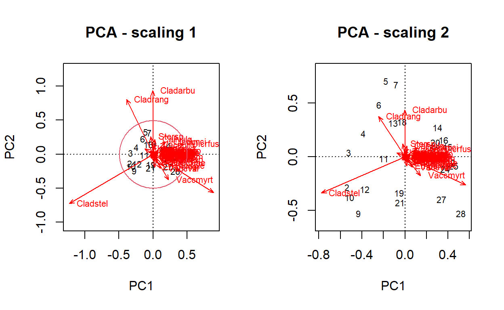
Note: It is possible to get a passive (post hoc) explanation of axes using environmental variables. Although there are means of incorporating explanatory variables directly in the ordination process (canonical ordination), one may be interested in interpreting a simple ordination by means of external variables.
#A posteriori projection of environmental variables in a PCA
# A PCA scaling 2 plot is produced in a new graphic window.
biplot(spe.h.pca, main = "PCA - scaling 2")
# Scaling 2 is default
(spe.h.pca.env <- envfit(spe.h.pca, env, scaling = 2))
***VECTORS
PC1 PC2 r2 Pr(>r)
N 0.42906 0.90328 0.1921 0.111
P 0.41543 -0.90962 0.2817 0.023 *
K 0.60351 -0.79736 0.2128 0.075 .
Ca 0.59845 -0.80116 0.3463 0.013 *
Mg 0.62282 -0.78237 0.2600 0.046 *
S 0.09264 -0.99570 0.1182 0.257
Al -0.96386 0.26642 0.4964 0.002 **
Fe -0.94350 0.33136 0.4364 0.003 **
Mn 0.87295 -0.48782 0.4638 0.002 **
Zn 0.65563 -0.75508 0.1872 0.093 .
Mo -0.64250 0.76629 0.0498 0.603
Baresoil 0.99472 0.10260 0.2582 0.063 .
Humdepth 0.83492 -0.55037 0.4671 0.001 ***
pH -0.99555 0.09422 0.2569 0.035 *
---
Signif. codes: 0 '***' 0.001 '**' 0.01 '*' 0.05 '.' 0.1 ' ' 1
Permutation: free
Number of permutations: 999# Plot significant variables with a user -selected colour
plot(spe.h.pca.env, p.max = 0.05, col = 3)# This has added the significant environmental variables to the
# last biplot drawn by R.
# BEWARE: envfit() must be given the same scaling as the plot to
# which its result is added!envfit proposes permutation tests to assess the
significance of the R2 of each explanatory variable regressed
on the two axes of the biplot. But this is not, by far, the best way to
test the effect of explanatory variables on a table of response
variables.
More on PCA
Conditions of applications:
PCA must be computed on dimensionally homogenous variables
data matrix not transposed since covariance or correlations among objects are meaningless
PCA can be applied to binary data
Species Presence-Absence data can be subject to a Hellinger or chord transformation prior PCA
Interpretation relationship variable based on angles
Practice 8.4 Using environmental dataset
carp.chemistry from Carpathian wetland (mainly chemistry):
(1) remove the variable slope, which is not a chemical variable; (2)
perform a PCA, and evaluate importance of ordination axes using the
broken stick criterion; (3) make a biplots using scaling=1 and scaling 2
then interpret results; (4) repeat the same for the species data
associates.
carp.chemistry<-read.table ('https://www.dipintothereef.com/uploads/3/7/3/5/37359245/carp.chemistry.txt',header=T, sep=",",row.names=1)
carp.spec<-read.table ('https://www.dipintothereef.com/uploads/3/7/3/5/37359245/carp.vasc_plants.txt',header=T, sep=",",row.names=1)Show Solution
#environmental data and RDA
chem$slope<-NULL
stand.chem <- scale (chem)
PCA1 <- rda (stand.chem)
# broken stick
screeplot(PCA1,bstick = TRUE, npcs = length(PCA1$CA$eig))
# Keiser-Guttman Criteron (above average eigen value)
ev<-PCA1$CA$eig
barplot(ev, main='Eigenvalues',col='bisque',las=2)
abline(h=mean(ev),col='red') # average eigenvalue
legend('topright','Average eigenvalue',lwd=1,col=2,bty='n')
#biplot
clean.plot (PCA1)Correspondance Analysis (CA) - For reference only
Data submitted to CA must be frequencies or frequency-like, dimensionally homogeneous and non-negative; that is the case of species counts or presence-absence data.
Accordingly, for a long time, CA has been one of the favorite tools for the analysis of species presence-absence or abundance data
The raw data are first transformed into a matrix Q of cell-by-cell contributions to the Pearson Chi-square statistic, and the resulting table is submitted to a singular value decomposition to compute its eigenvalues and eigenvectors
The result is an ordination, where it is the Chi-square distance (D16) that is preserved among sites instead of the Euclidean distance D1.
Chi-square distance is not influenced by the double zeros. Therefore, CA is a method adapted to the analysis of species abundance data without pre-transformation.
Graphical representation
Accordingly, in a CA, both objects and species are represented by points in the ordination diagram (compared to PCA where species/descriptors are vectors and sites are points).
Note 1: Chi-square gives high weight to rare species, so usually considered as one the least suitable distance measures for ecological data.
Note 2: Suffers from an artefact called arch effect, which is caused by non-linear correlation between the first and higher axes. Popular, even though clumsy way how to remove this artefact is to use Detrending Correspondance Analysis (DCA)
Similarly to PCA, two type of scaling are possible:
scaling 1: the distances among objects (sites) in the reduced ordination space approximate their chi-square distance; any object found near the point representing a species is likely to contain a high contribution of that species.
scaling 2: the distances among descriptors (species) in the reduced space approximate their chi-square distances; any species that lies close to the point representing an object is more likely to be found in that object or to have higher frequency there.
Both The broken stick model and Kaiser-Guttman criterion applied for guidance on CA axes to retain.
Computation
Correspondance analysis can be computed using the function
cca (library vegan). If the environmental
matrix is not specified, cca calculates an unconstrained
correspondence analysis.
You can apply the functions screeplot or
evplot (Borcard et al. 2011), in order to select important
ordination axes based on Kaiser-Guttman or broken stick model.
spe.ca<-cca(spe) #default summary for "scaling = 2"
screeplot(spe.ca, bstick = TRUE, npcs = length(spe.ca$CA$eig))
ev2<-spe.ca$CA$eig # extract eigen value
evplot(ev2)
It is time to draw the CA biplots of this analysis. Let us compare the two scalings.
# CA biplots
par(mfrow=c(1,2))
# Scaling 1: sites are centroids of species
plot(spe.ca,scaling=1,main='CA - biplot scaling 1')
# Scaling 2: species are centroids of species
plot(spe.ca,main='CA - biplot scaling 2')
Another option using function ordplot
# CA biplots
par(mfrow=c(1,2))
# Scaling 1: sites are centroids of species
ordiplot(spe.ca,scaling=1,main='CA - biplot scaling 1')
# Scaling 2: species are centroids of species
ordiplot(spe.ca,main='CA - biplot scaling 2')dev.off()null device
1 Passive (Post Hoc) explanation of axes using environmental parameters
Here again you can use envfit from the
vegan package: finds vectors or factors average of
environmental variables. The projections of points onto vectors have
maximum correlation with corresponding environmental variables, and the
factors show the averages of factor levels.
# A posteriori projection of environmental variables in a CA
# The last plot produced (CA scaling 2) must be active
plot(spe.ca,main='CA- biplot scaling 2')
spe.ca.env <-envfit(spe.ca,env)
plot(spe.ca.env)
# It added the environment variables to the last biplot drawnplot(spe.ca, main = "CA - scaling 2",
sub = "Fitted curves: humdepth (red), Baresoil (green)")
spe.ca.env <- envfit(spe.ca ~ Humdepth + Baresoil, env)
plot(spe.ca.env) # Two arrows
ordisurf(spe.ca, env$Humdepth, add = TRUE)
Family: gaussian
Link function: identity
Formula:
y ~ s(x1, x2, k = 10, bs = "tp", fx = FALSE)
Estimated degrees of freedom:
1.77 total = 2.77
REML score: 21.13899 ordisurf(spe.ca, env$Baresoil, add = TRUE, col = "green")
Family: gaussian
Link function: identity
Formula:
y ~ s(x1, x2, k = 10, bs = "tp", fx = FALSE)
Estimated degrees of freedom:
5.42 total = 6.42
REML score: 93.07306 Arch effect and Detrended Correspondance Analysis (DCA)
Long environmental gradients often support a succession of species. Since the species that are controlled by environmental factors tend to have unimodal distribution, a long gradient may encompass sites that, at both ends of the gradient, have no species in common: their distance reaches a maximum value (or their similarity is 0). But if we look at either side of the succession, contiguous sites continue to grow more different from each other. Therefore, instead of linear trend on PCA, the gradient is represented on the pair of CA axes as an arch.
Detrending is the process of removing the arch effect: DCA does it by dividing the first axis into segments (or polynomial relationship), and then by centering the second axis on zero. Watch here
Detrended Correspondance Analysis (DCA) is often criticized and not recommended. Howver, DCA is still one of the most widely used unconstrained ordination methods among vegetation ecologist (zoologist are biased toward nMDS).
Practice 8.5 Using Ellenberg’s Danube meadow dataset,
data mveg from the package dave: (1) Compare
the results of CA and DCA; (2) Try (more challenging) to combine the
results of both CA and DCA in the same ordination plot. (Tip 1) You may
need functions cca, decorana,
ordiplot, scores and text. (Tip
2) First calculate both CA and DCA on Danube data and draw CA ordination
scatterplot (to draw only sites, in ordiplot use argument
display = 'sites'). (Tip 3) To add sites from DCA, you need
to shift their scores along the second (vertical) axis, otherwise they
will be clustered together with CA samples. Add constant (e.g. 2) to the
scores along the second axis. To extract scores, use the function scores
on object DCA with argument display = 'sites' ) (Tip 4) To
add sites from DCA into CA ordination plot, use low-level graphical
function text on matrix of scores from DCA, with corrected second
axis.(Tip 5). To avoid overlap of labels in text function, employ also
the argument labels, which should contain values from rownames of DCA
scores. Results should look similar to this:

Principal Coordinate Analysis (PCoA) - For reference only
Also called Multi-Dimensional Scaling (MDS)
PCA and CA both impose the preservation of a distance among objects: the Euclidean distance and the chi-squared distance, respectively.
If you want to ordinate objects on the basis of another distance measure, then PCoA is the method of choice
PCoA provides a Euclidean representation of a set of objects whose relationships are measured by any similarity or distance measured chosen by the user.PCoA should be reserved to situations where no Euclidean measure is preserved.
Like PCA and CA, PCoA produces a set of orthogonal axes whose importance is measured by eigenvalues. Since it is based on an association matrix , it can directly represent the relationships either among objects (Q mode matrix) or variables (R mode matrix).
If non-Euclidean association coefficient, PCoA may produce several negative eigenvalues in addition to the positive one: can be remediate by adding a constant (Lingoes or Caillez correction)
Can also project variables (e.g. species) on a PCoA a posteriori
Note: Computing Euclidean distance among sites and running a PCoA yields the exact same results as running a PCA of the same data and looking at the scaling 1 ordination results.
Computation
cmdscale(libraryvegan) – calculates PCoA of distance among samples (this could be calculated e.g. by functionvegdist). Use functionordiplotto project ordination.pcoa(libraryape) – another way to achieve PCoA analysis. Usebiplot.pcoafunction to project ordination
The ordination axes of a PCoA can be interpreted like those of a PCA or CA: proximity of objects represents similarity in the sense of the association measured used
# PCoA on a Bray-Curtis dissimilarity matrix of fish species
spe.bray<-vegdist(spe)
spe.b.pcoa<-cmdscale(spe.bray, eig=TRUE, add=T)
# Plot of the sites and weighted average projection of species
ordiplot(spe.b.pcoa, type='t', main='PCoAwith species')
abline(h=0,lty=3)
abline(v=0, lty=3)
# add species (weighted average species abundance)
spe.wa<-wascores(spe.b.pcoa$points[,1:2],spe)
text (spe.wa,rownames(spe.wa),cex=0.7,col='red')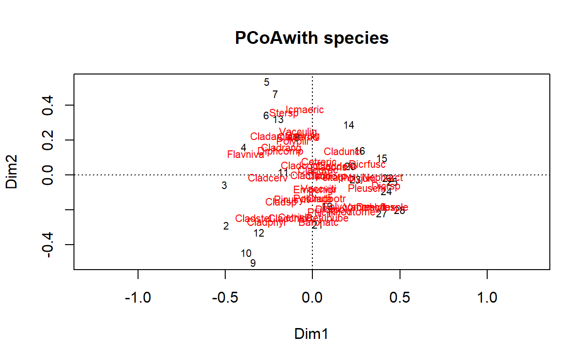
doubs data with
pcoa
doubspec.bray<-vegdist(doubspec)
doubspec.bray.pcoa<-pcoa(doubspec.bray)
biplot.pcoa(doubspec.bray.pcoa,doubspec)
abline(h=0,lty=3)
abline(v=0,lty=3)
non-metric Multidimensional Scaling (nMDS)
If priority is not to preserve the exact distances among objects in an ordination diagram, but rather to represent as well as possible the ordering relationship among objects in a small and specified number of axes
Like PCoA, nMDS can produce ordinations of objects from any distance matrix
Method can cope with missing distances, as long as there are enough measures left to position each object with respect to each other.
This is NOT a eigenvalue based ordination method, and does not maximize the variability associated with individual axes of the ordination.
Procedure
Very simple:
specify the number m of axes (dimensions) – usually 2 !
construct an initial configuration of the objects in the m dimensions, to be used as a starting point of an iterative adjustment process. This is a tricky step, since the end-results may depend on the starting configuration.
an iterative procedure tries to position the objects in the requested number of dimensions in such was as to minimize a stress function (scaled from 0 to 1), which measures how far the distances in the reduced-space configuration are from being monotonic to the original distance in the association matrix
the adjustment goes on until the stress value can no more be lowered, or predetermined value (sometimes never reached)
Computation
Functions:
metaMDS(libraryvegan) – advanced function, composed of many sub-routine steps. Species points are added to the ordination plot usingwascoresisoMDS(libraryMASS) if missing values in the distance matrix andbestnmdspackagelabdsv
spe.nmds<-metaMDS(spe,distance='bray',trymax=999)Square root transformation
Wisconsin double standardization
Run 0 stress 0.1843196
Run 1 stress 0.2365002
Run 2 stress 0.2466829
Run 3 stress 0.2450706
Run 4 stress 0.2080746
Run 5 stress 0.1825658
... New best solution
... Procrustes: rmse 0.04162424 max resid 0.1517931
Run 6 stress 0.18584
Run 7 stress 0.1955836
Run 8 stress 0.2306903
Run 9 stress 0.1948413
Run 10 stress 0.2124728
Run 11 stress 0.1976153
Run 12 stress 0.195049
Run 13 stress 0.1825658
... Procrustes: rmse 1.468624e-05 max resid 3.493823e-05
... Similar to previous best
Run 14 stress 0.220789
Run 15 stress 0.2048307
Run 16 stress 0.222519
Run 17 stress 0.2152682
Run 18 stress 0.1948413
Run 19 stress 0.196245
Run 20 stress 0.2344281
*** Solution reachedspe.nmds
Call:
metaMDS(comm = spe, distance = "bray", trymax = 999)
global Multidimensional Scaling using monoMDS
Data: wisconsin(sqrt(spe))
Distance: bray
Dimensions: 2
Stress: 0.1825658
Stress type 1, weak ties
Two convergent solutions found after 20 tries
Scaling: centring, PC rotation, halfchange scaling
Species: expanded scores based on 'wisconsin(sqrt(spe))' spe.nmds$stress[1] 0.1825658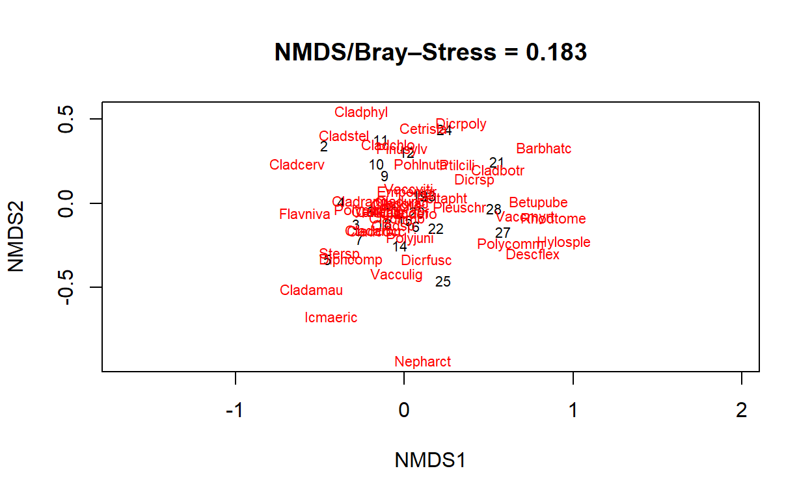
Quality and stress
A useful way to assess the appropriateness of an nMDS is to compare, in a Shepard diagram, the distance among objects in the ordination with the original distances.
stressplot(libraryvegan) – draws Shepard stress plot, which is the relationship between real distances between samples in resulting m dimensional ordination solution, and their particular dissimilarities.
stressplot(spe.nmds, main='Shepard plot')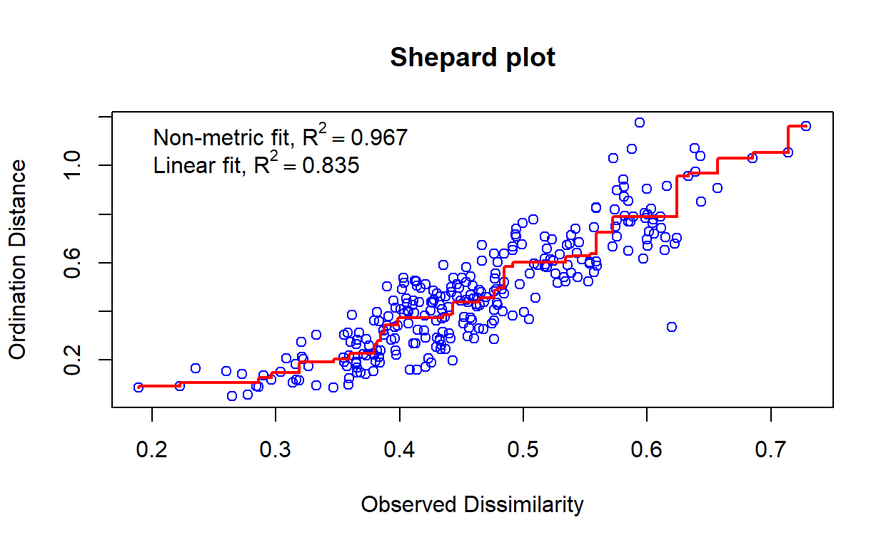
- In addition, the goodness-of-fit of the ordination is measured as the R2 of either a linear or a non-linear regression of the NMDS distances on the original ones
# goodness of fit
gof<-goodness(spe.nmds)
plot(spe.nmds,type='t',main='Goodness of fit')
points(spe.nmds, display='sites', cex=gof*90)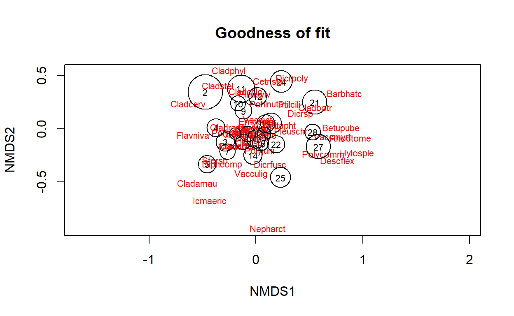
Adding cluster
# Add colours from a clustering results to an NMDS plot
# Ward clustering of Bray-Curtis dissimilarity matrix
spe.bray.ward <- hclust(spe.bray,'ward.D')
spe.bw.groups <- cutree(spe.bray.ward,k=4)
grp.lev <- levels(factor(spe.bw.groups))
# combination with NMDS result
sit.sc <- scores(spe.nmds)
p <- ordiplot (sit.sc, type='n', main='NMDS/BRAY – clusters Ward/Bray')')
for (i in 1:length(grp.lev)) {
points(sit.sc$sites[spe.bw.groups==i,],pch=(14+ i),cex=2, col=i+1)
}
text(sit.sc$sites,row.names(spe),pos=4,cex=0.7)
#add the dendrogram
ordicluster(p,spe.bray.ward,col='dark grey')
# using locator you need to point out where you want to put the legend
# legend(locator(1), paste('Group',c(1:length(grp.lev))),pch=14+c(1:length(grp.lev)), col=1+c(1:length(grp.lev)),pt.cex=2)ordihull&
ordispider
Run 0 stress 0.1192678
Run 1 stress 0.1183186
... New best solution
... Procrustes: rmse 0.02027062 max resid 0.06496316
Run 2 stress 0.1192678
Run 3 stress 0.1183186
... Procrustes: rmse 1.673467e-05 max resid 5.156138e-05
... Similar to previous best
Run 4 stress 0.1183186
... Procrustes: rmse 1.538588e-05 max resid 4.62431e-05
... Similar to previous best
Run 5 stress 0.1808911
Run 6 stress 0.1183186
... Procrustes: rmse 1.435957e-05 max resid 4.230801e-05
... Similar to previous best
Run 7 stress 0.1192679
Run 8 stress 0.1183186
... New best solution
... Procrustes: rmse 7.256206e-06 max resid 1.506995e-05
... Similar to previous best
Run 9 stress 0.1192679
Run 10 stress 0.1183186
... Procrustes: rmse 2.336108e-06 max resid 7.660371e-06
... Similar to previous best
Run 11 stress 0.1183186
... Procrustes: rmse 1.714617e-05 max resid 5.506099e-05
... Similar to previous best
Run 12 stress 0.1192678
Run 13 stress 0.1192679
Run 14 stress 0.1192678
Run 15 stress 0.1192679
Run 16 stress 0.1192678
Run 17 stress 0.1192679
Run 18 stress 0.1183186
... Procrustes: rmse 3.02124e-05 max resid 9.721601e-05
... Similar to previous best
Run 19 stress 0.1183186
... New best solution
... Procrustes: rmse 5.198989e-07 max resid 1.39972e-06
... Similar to previous best
Run 20 stress 0.1192678
*** Solution reachedplot(NMDS.dune,type='t',main=paste('NMDS/Bray – Stress =',round(NMDS.dune$stress,3)))
pl<-ordihull(NMDS.dune, Management, scaling = 3, draw='polygon',col='grey')
ordispider(pl, col="red", lty=3, label = TRUE)
# ?anosim
# ?adonisordisurf
Fits a smooth surface for given variable and plots the result on ordination diagram (Generalized Additive Model)
Run 0 stress 0.1000211
Run 1 stress 0.1926906
Run 2 stress 0.2113579
Run 3 stress 0.1532704
Run 4 stress 0.1000211
... New best solution
... Procrustes: rmse 5.092473e-06 max resid 2.200626e-05
... Similar to previous best
Run 5 stress 0.1000211
... Procrustes: rmse 2.648452e-06 max resid 1.00044e-05
... Similar to previous best
Run 6 stress 0.1000211
... New best solution
... Procrustes: rmse 2.468645e-06 max resid 1.040678e-05
... Similar to previous best
Run 7 stress 0.1000211
... New best solution
... Procrustes: rmse 1.176689e-06 max resid 1.971768e-06
... Similar to previous best
Run 8 stress 0.1000211
... Procrustes: rmse 3.887178e-06 max resid 1.651639e-05
... Similar to previous best
Run 9 stress 0.1532704
Run 10 stress 0.1000211
... Procrustes: rmse 5.511507e-06 max resid 2.354039e-05
... Similar to previous best
Run 11 stress 0.1000211
... Procrustes: rmse 8.801784e-06 max resid 2.975533e-05
... Similar to previous best
Run 12 stress 0.1000211
... Procrustes: rmse 3.772652e-06 max resid 1.600832e-05
... Similar to previous best
Run 13 stress 0.1000211
... Procrustes: rmse 3.175291e-05 max resid 0.0001376566
... Similar to previous best
Run 14 stress 0.219732
Run 15 stress 0.1000211
... Procrustes: rmse 9.666297e-07 max resid 2.200732e-06
... Similar to previous best
Run 16 stress 0.160494
Run 17 stress 0.1733339
Run 18 stress 0.1793602
Run 19 stress 0.1000211
... Procrustes: rmse 3.796879e-06 max resid 1.595343e-05
... Similar to previous best
Run 20 stress 0.1000211
... Procrustes: rmse 1.49873e-05 max resid 6.315216e-05
... Similar to previous best
*** Solution reachedordisurf(vare.mds ~ Baresoil, varechem, bubble = 5)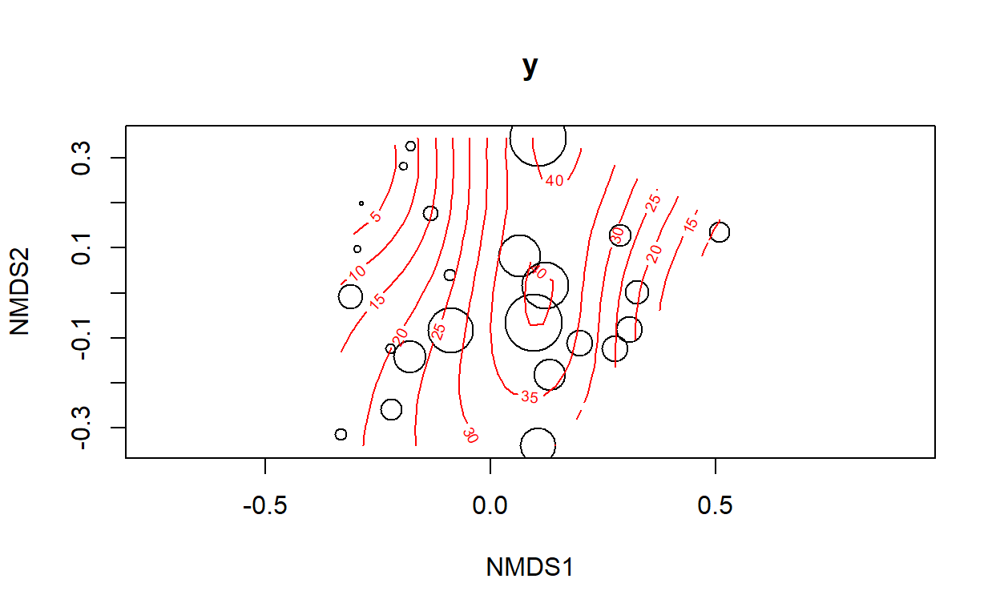
Family: gaussian
Link function: identity
Formula:
y ~ s(x1, x2, k = 10, bs = "tp", fx = FALSE)
Estimated degrees of freedom:
5.17 total = 6.17
REML score: 93.32747
Practice 8.6 Using Tikus dataset (library
mvabund) and the years 1981, 1983 and 1985: visualize
Bray-Curtis dissimilaritie matrix into a nMDS ordination. You will use
different symbols for the different years. Add legend to the upper right
corner of the ordination. Compare species composition among years using
PERMANOVA adonis (?adonis) test.
Constrained ordinations - for reference only
Also called direct Gradient Analysis or constrained Analysis
Explanatory analyses may reveal the existence of clusters or groups of objects in a data set. When a supplementary table or matrix of env. variables is available for those objects , it is then possible to examine whether the observed pattern are related to environmental gradients
Objectives may be to reveal the link between community structure and habitat heterogeneity, between community structure and spatial distance, or to identify the main variables affecting communities when a large set of env. variables has been collected

At the opposite of unconstrained ordination, where effect of env. variables can be interpret a posteriori, canonical ordination associates two (or more) data sets in the ordination process itself. It formally tests statistical hypotheses about the significance of these relationships

In constrained (canonical) ordination analyses, only the variation in the species table that can be explained by the environmental variables is displayed and analyzed, and not all the variation in the species table
Gradients are supposed to be known and represented by the measured variable or the combinations, while species abundance or occurrence is considered to be a response to those gradients
The aim is to find the best mathematical relationship between species composition and the measure environmental gradients
Constrained ordinations are mostly based on multivariate linear models relating principal axis to the observed env. variables, and the different techniques depend on data types (matrix or table), and on the hypothesis underlying species distribution in the gradients (i.e. linear or unimodal)

RDA has a wide application
Redundancy Analysis (RDA)
RDA is a method combining regression and principal component analysis (direct extension of regression analysis to model multivariate response data)
RDA is an extremely powerful tool in the hands of ecologists, especially since the introduction of the Legendre and Gallagher (2001) transformations that open RDA to the analysis of community composition data tables (transformation-based RDA tb-RDA)
RDA = multivariate (meaning multiresponse) multiple linear regression followed by a PCA of the table of fitted values. Method seeks, in successive order, a series of linear combinations of the combinations of the explanatory variables that best explain the variation of the response matrix.
In RDA, the number of canonical axes corresponds to the number of explanatory variables, or more precisely to the number of degrees of freedom. Each canonical axes corresponds to a linear combination (i.e. multiple regression model) of all explanatory variables
Computation
In R, the vegan functions:
rdaperfoms ardaif a matrix of environmental variable is supplied (if not it calculates a PCA)RsquareAdjextracts the value of R2 and adjusted-R2 from results of ordination (and also regression)
vegan allows the computation of an RDA in two different
ways.
- Matrix syntax
The simplest syntax is to list the names of the objects (matrices) involved separated by commas such as:
RDA <- rda (Y, X, W) where Y is the response matrix (species
composition), X is the explanatory matrix
(environmental factors) and W is the
matrix of covariables.
This is the simplest way, but it does not allow factors (qualitative variables) to be included in the explanatory and covariable matrices.
- Formula syntax
RDA <- rda (Y ~ var1 + factorA + var2*var3 + Condition (var4), data = XW)In this example, the explanatory variables used are a quantitative
variable var1, categorical variable
factorA,and interaction term between var2 and
var3, whereas var4 is used as covariable and
idnetified to partially removed its effects.
Examples (doubs data)
Data preparation
# import the data
data (doubs)
spe <- doubs$fish
env <- doubs$env
spa <- doubs$xy
# remove empty site 8
spe<-spe[-8,]
env<-env[-8,]
# set aside the variable 'dfs' (distance from the source) for later use
dfs<-env[,1]
#remove the 'dfs' variable from the env dataset
env<-env[,-1]
#recode the slope variable (slo) into a factor (qualitative) variable (to show how these are handled in the ordinations)
slo2<-rep('very_steep',nrow(env))
slo2[env$slo<=quantile(env$slo)[4]] = 'steep'
slo2[env$slo<=quantile(env$slo)[3]] = 'moderate'
slo2[env$slo<=quantile(env$slo)[2]] = 'low'
slo2 <- factor(slo2,levels=c('low','moderate','steep','very_steep'))
# create an env2 data frame with slope as a qualitative variable
env2<-env
env2$slo<-slo2
# create two subsets of explanatory variables
# Physiography (upstream-downstream gradient
envtopo<-env[,c(1:3)] # names(envtopo), covariate matrix isolated form env
# water quality
envchem <- env[,c(4:10)] # names(envchem), env. matrix isolated form env
# Hellinger-transform the species dataset
spe.hel<-decostand(spe,'hellinger') # spe matrixrda
Same kind of formula as used in lm and other R functions
devoted to regression. Check ?rda for details.

Partitioning of variance: variance of Y explained by the X variables (constrained proportion, 72.71% here), the unexplained variance of Y (unconstrained proportion, 27.29% here). This R2 is biased.
Eigenvalues and their contribution: Summarize the eigenvalues, the proportions explained and the cumulative proportion of each canonical axis (each canonical axis = each constraining variable, in this case, the environmental variables from env). Cumulative proportion give the biased R2.
Accumulated constrained eigenvalues: these are cumulative amounts of variance expressed as proportions of the total explained variance, as opposed to their contribution to the total variance described before
Species scores: coordinates of the tips of the vector representing the response variables in the bi- or tri- plots. Depending on the scaling chosen
Site scores: coordinates of the sites as expressed in the space of the response variables Y
Site constraints: coordinates of the sites in the space of the explanatory variable X. Fitted site scores
Biplot scores: coordinates of the tips of the vectors representing explanatory variables. Correlations based. For factors, representation of the centroids of the levels is preferable.
Centroids for factor constraints: coordinates of centroids of levels of factor variables, i.e. means of the scores of the sites possessing state ‘1’ for a given level.
In the rda output, an interesting information is
missing: the canonical coefficients, i.e. the
equivalent of regression coefficients for each explanatory
variable on each canonical axis. They can be retrieved using
coef:
coef(spe.rda) RDA1 RDA2 RDA3 RDA4
alt 4.482548e-04 7.559499e-05 5.205825e-04 0.0003883845
slomoderate -1.239617e-02 -1.660194e-02 1.600691e-02 -0.0278562534
slosteep 4.783902e-02 4.893302e-02 1.022578e-01 0.1347997771
slovery_steep 1.800056e-02 -5.691933e-02 2.322638e-01 0.1002359565
flo -1.406377e-05 4.440084e-05 8.929849e-05 0.0001647159
pH 1.882277e-03 -3.163592e-03 -4.820217e-03 0.0114164750
har 2.558034e-03 -1.955496e-03 -6.590194e-03 -0.0093556696
pho 1.031542e-03 4.583584e-04 -1.000153e-03 -0.0010502434
nit -1.238247e-04 1.041485e-03 6.253967e-04 0.0007742183
amm -1.084412e-03 -4.407786e-03 5.724774e-05 0.0005385427
oxy 6.866921e-03 1.980446e-03 -8.941533e-03 0.0120088406
bdo 1.083225e-03 -2.696114e-03 -2.532252e-03 0.0074517578
RDA5 RDA6 RDA7 RDA8
alt 0.0018572061 -6.313946e-05 -1.355362e-03 0.0011208492
slomoderate 0.2761288455 1.310695e-01 -2.291843e-02 0.0188300635
slosteep 0.3938129289 -1.795824e-01 4.631974e-02 0.1236428214
slovery_steep 0.0368146352 -1.742060e-01 5.172993e-01 0.0675640140
flo 0.0001331845 2.705757e-05 -2.419805e-05 0.0001039463
pH 0.0412886847 1.091403e-02 1.398064e-02 -0.0436295510
har 0.0052287075 -6.098098e-03 2.195518e-03 0.0105362477
pho 0.0042299123 -3.694132e-03 3.587466e-04 -0.0070104314
nit 0.0023440122 -3.541252e-04 -2.404285e-03 0.0012840316
amm -0.0181246888 4.798631e-05 2.819379e-03 0.0106801348
oxy 0.0032052566 3.880445e-03 -5.802604e-03 0.0061374900
bdo 0.0067082880 9.276548e-03 -1.971950e-03 0.0047865971
RDA9 RDA10 RDA11 RDA12
alt -2.530083e-04 1.189659e-03 6.826822e-04 0.0009471677
slomoderate -3.113354e-01 -2.780063e-01 3.980809e-02 -0.2974896027
slosteep 9.638200e-02 -4.471000e-01 2.445036e-01 -0.3475535793
slovery_steep -2.262451e-01 -5.900229e-01 2.457104e-01 -0.1848717482
flo -6.430624e-06 4.427139e-05 -2.256503e-05 0.0000648586
pH -2.158410e-03 -9.040638e-02 6.960453e-03 0.0575630103
har -6.844877e-04 3.353110e-03 7.758175e-04 0.0062181193
pho -2.865315e-03 2.459177e-03 -1.554490e-05 -0.0063090083
nit -6.863650e-04 1.130900e-03 3.983544e-03 0.0009422466
amm 3.084216e-03 -1.217501e-02 -1.596411e-02 0.0089790152
oxy -1.964441e-03 8.988104e-03 6.274157e-03 0.0025893743
bdo 3.593651e-03 6.541604e-03 1.113928e-02 0.0040315843In addition like the ordinary R2 from multiple regression
the R2 is biased. It can be cure by adjusting the
R2 using Ezekiel’s formula (Ezekiel 1930). An adjusted
R2 near 0 indicates that X does not explain more of the
variation of Y than random normal variables would do. It can be
negative, indicating that the explanatory variables X do worse than
random normal variable would. The R2 and
adjusted-R2 can be computed using vegan’s function
RsquareAdj
#Retrieval of the adjusted R2
# Unadjusted R2 retrieve from RDA results
R2<-RsquareAdj(spe.rda)$r.squared
# Adjusted R2 retrieve from RDA object
R2adj<-RsquareAdj(spe.rda)$adj.r.squaredPlots
We can call this a triplot since there are three different entities in the plot: sites, response variables and explanatory variables. To differentiate the latter two, it is good to draw arrowhead only on the vector of the quantitative explanatory variables, not on the response variable vectors
# triplot of the rda results
par(mfrow = c(2, 2))
# site scores are weighted by sum of species
# scaling 1: distance triplot
plot (spe.rda, scaling=1, main='Triplot RDA spe.hel ~ env – scaling 1 – wa scores')
spe.sc <- scores (spe.rda, choices=1:2, scaling=1, display='sp')
arrows (0,0, spe.sc[,1],spe.sc[,2],length=0,lty=1,col='red')
# scaling 2 (default)
plot (spe.rda,main='Triplot RDA spe.hel ~ env – scaling 2 – wa scores')
spe2.sc <- scores (spe.rda, choices=1:2, display='sp')
arrows (0,0, spe2.sc[,1],spe2.sc[,2],length=0,lty=1,col='red')
# site scores are linear combinations of the environmental variables
# scaling 1
plot (spe.rda,scaling=1,display=c('sp','lc','cn'),main='Triplot RDA spe.hel ~ env – scaling 1 – lc scores')
arrows (0,0, spe.sc[,1],spe.sc[,2],length=0,lty=1,col='red')
# scaling 2
plot (spe.rda,display=c('sp','lc','cn'),main='Triplot RDA spe.hel ~ env – scaling 2 – lc scores') # cn for centroids
arrows (0,0, spe2.sc[,1],spe2.sc[,2],length=0,lty=1,col='red')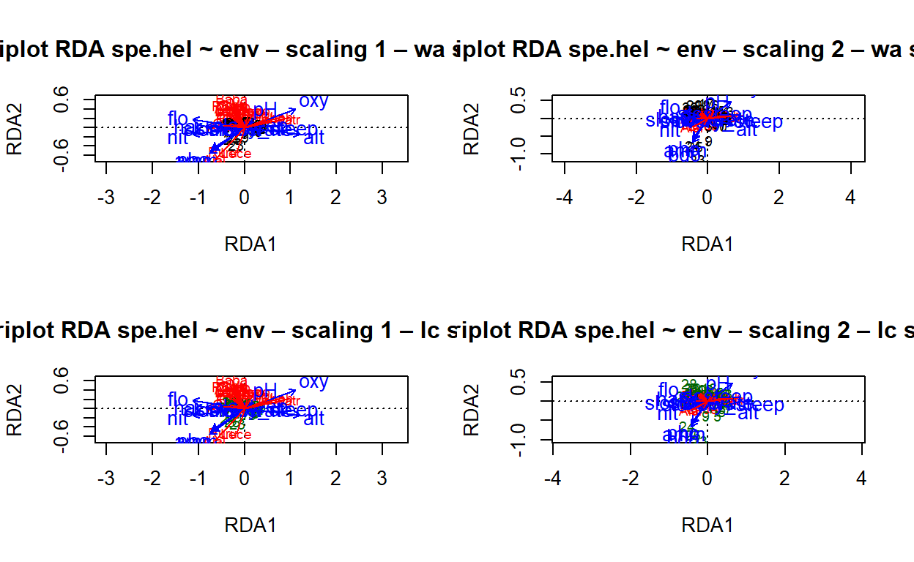
Interpretation
Interpretation of the two scaling
For the species and the sites the interpretation of the two scalings in the same as in PCA
Presence of vectors and centroids of explanatory variables call for additional rules
Let interpret our two last triplots:
First two canonical axis alone explaining 58.3% of the total variance of the data, the first axis alone explaining 47.6% (unadjusted values)
Since R2-adj = 0.5320, the percentages of accumulated constrained eigenvalues show that the first axis alone explains 0.5224 x 0.643 = 0.336 or 33.6% variance, and the two first 0.5224 x 0.788 = 0.412 or 41.2%
Major trends have been modelled in this analysis ! In ecology, data are quite noisy, so you should never expect a very high value of R2 adj

Overall test
The overall test function is called anova.cca. This name
is unfortunate, since it leads to confusion with the classical ANOVA
test, which it is not !
# Global test of the RDA results
anova.cca(spe.rda,step=1000)Permutation test for rda under reduced model
Permutation: free
Number of permutations: 999
Model: rda(formula = spe.hel ~ alt + slo + flo + pH + har + pho + nit + amm + oxy + bdo, data = env2)
Df Variance F Pr(>F)
Model 12 0.36537 3.5522 0.001 ***
Residual 16 0.13714
---
Signif. codes: 0 '***' 0.001 '**' 0.01 '*' 0.05 '.' 0.1 ' ' 1The test of the axes can only be run with the formula synthax. How many canonical axes are significant?
# Test of all canonical axes
anova.cca(spe.rda,by='axis',step=1000)Permutation test for rda under reduced model
Forward tests for axes
Permutation: free
Number of permutations: 999
Model: rda(formula = spe.hel ~ alt + slo + flo + pH + har + pho + nit + amm + oxy + bdo, data = env2)
Df Variance F Pr(>F)
RDA1 1 0.228081 26.6098 0.001 ***
RDA2 1 0.053696 6.2646 0.010 **
RDA3 1 0.032124 3.7478 0.387
RDA4 1 0.023207 2.7075 0.788
RDA5 1 0.008707 1.0159 1.000
RDA6 1 0.007218 0.8421 1.000
RDA7 1 0.004862 0.5673 1.000
RDA8 1 0.002919 0.3406 1.000
RDA9 1 0.002141 0.2497 1.000
RDA10 1 0.001160 0.1353 1.000
RDA11 1 0.000913 0.1066 1.000
RDA12 1 0.000341 0.0397 1.000
Residual 16 0.137141
---
Signif. codes: 0 '***' 0.001 '**' 0.01 '*' 0.05 '.' 0.1 ' ' 1Partial rda
Partial canonical ordination is the multivariate equivalent of partial linear regression: it is possible to run a RDA of a (transformed) plant species data matrix Y, explained by a matrix of climatic variables X, in the presence of soil covariables W. Display the patterns of the species data uniquely explained by a linear model of the climatic variables when the effect of the soil is held constant
Let’s play with the two objects containing subsets of environmental variables: physiographical variables (
envtopo), i.e. altitude, slope (orginal one not qualitative), and flow / water chemistry (envchem) i.e, pH, hardness, phosphates, nitrates, ammonium, oxygen content as well as biological oxygen demand
Does water chemistry significantly explain the fish species pattern when the effect of the topographical gradient is held constant?
# Partial RDA: effect of water chemistry, holding physiography constant
# simple interface; X and W may be separate tables of quantitative variales
spechem.physio <- rda(spe.hel,envchem,envtopo)
spechem.physio
summary(spechem.physio)
# formula interface; X and W must be in the same data fram
class(env)
spechem.physio2<-rda(spe.hel~pH+har+pho+nit+amm+oxy+bdo+Condition(alt+slo+flo), data=env)
spechem.physio2
summary(spechem.physio2)
# the results of the two analyses are identical
# check in the output: four components in the partitioning variance instead of 3
# Test of the partial RDA (using the results with the formula interface to allow the tests of the axes to be run)
anova.cca(spechem.physio2,step=1000)
anova.cca(spechem.physio2,step=1000,by='axis')
# partial RDA triplots (with fitted site score)
par(mfrow=c(1,2))
#scaling 1
plot(spechem.physio,scaling=1,display=c('sp','lc','cn'), main='Triplot RDA spe.hel ~ chem | topo – scaling 1 – lc scores')
spe3.sc <- scores(spechem.physio,choices=1:2,scaling=1, display='sp')
arrows(0,0,spe3.sc[,1],spe3.sc[,2],length=0,lty=1,col='red')
#scaling 2
plot(spechem.physio,display=c('sp','lc','cn'), main='Triplot RDA spe.hel ~ chem | topo – scaling 2 – lc scores')
spe4.sc <- scores(spechem.physio,choices=1:2,display='sp')
arrows(0,0,spe4.sc[,1],spe4.sc[,2],length=0,lty=1,col='red')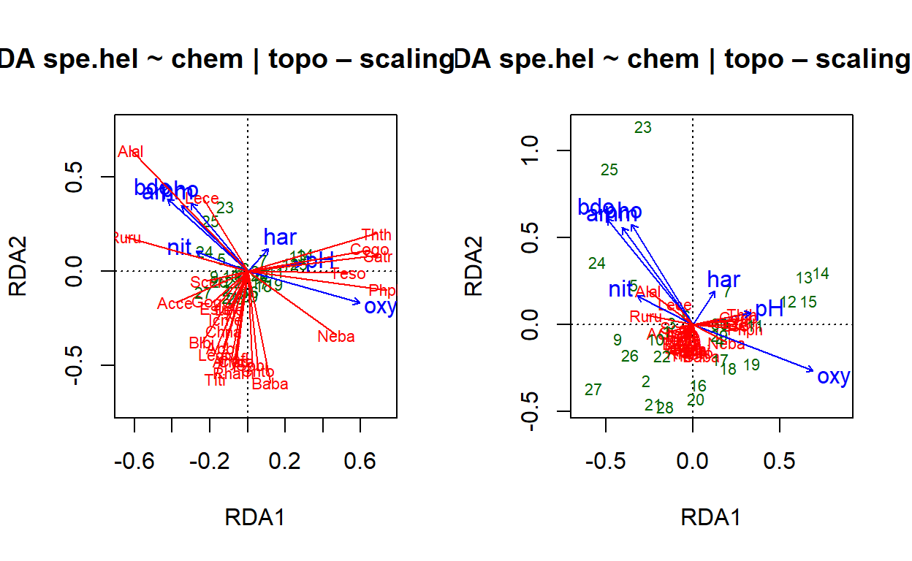
The result of this partial analysis differs somewhat from the
previous results but not fundamentally. har and
nit are less important in explaining the fish community
structure. This may be due to the fact that these two variables are well
correlated with the position along the river.
Forward selection of explanatory variables
It happens we wish to reduce the number of explanatory variables. The reasons vary: search for parsimony, rich data set but poor at priori hypotheses, or a method producing a large set of explanatory variables which must be reduced afterwards.
In
doubsdata, there could be two reasons to reduce the number of explanatory variables: search for parsimony, and possible strong linear dependencies (correlations) among the explanatory variables in the RDA modelLinear dependencies can be explored by computing the variables’ variance inflation factor. VIFs above 20 indicates strong collinearity. Ideally, VIFs above 10 should be at least examined, and avoid if possible. VIFs can be computed in
veganafterrdaorccausing the functionvif.cca
# Variance inflation factor (VIF) in two RDAs
# First RDA: all environmental variables
vif.cca(spe.rda) alt slomoderate slosteep slovery_steep flo
20.397021 2.085921 2.987679 4.594983 6.684187
pH har pho nit amm
1.363575 3.049937 30.614913 18.953092 40.114746
oxy bdo
6.854703 17.980889 # Second RDA: subset of environmental variables
vif.cca (spechem.physio) alt slo flo pH har pho nit
17.475490 4.221651 6.021996 1.471728 2.994588 25.379501 15.630086
amm oxy bdo
30.353271 7.623932 18.098637 # A reduction is justified !!!To select the significant explanatory variables, you can then perform
a stepwise selection (forward or backward), using the
ordistep or ordiR2step function (or using the
forward.sel function of package packfor)
# Forward selection using ordistep() function. This function allows the use of factors. Options are also available for stepwise and backward selection of the explanatory variables
spe.rda.all<-rda(spe.hel~.,data=env)
step.forward1 <- ordistep(rda(spe.hel~1,data=env), scope=formula(spe.rda.all),direction='forward',pstep=1000)
step.forward2 <- ordiR2step(rda(spe.hel~1,data=env), scope=formula(spe.rda.all),direction='forward',pstep=1000)These analyses show that the most parsimonious attitude would be to settle a model containing only three variables: altitude, oxygen, and biological oxygen demand
Parsimonious RDA
spe.rda.pars <- rda(spe.hel~alt+oxy+bdo, data=env)
spe.rda.pars
anova.cca(spe.rda.pars,step=1000)
anova.cca(spe.rda.pars,step=1000,by='axis')
vif.cca(spe.rda.pars)
R2a.pars <- RsquareAdj(spe.rda.pars)$adj.r.squared# Triplots of the parsimonious RDA (with fitted site scores)
# scaling 1
plot(spe.rda.pars,scaling=1,display=c('sp','lc','cn'),main='Triplot RDA spe.hel ~ alt+oxy+bdo – scaling 1 – lc scores')
spe4.sc <- scores(spe.rda.pars, choices=1:2, scaling=1,display='sp')
arrows(0,0,spe4.sc[,1],spe4.sc[,2],length=0,lty=1, col='red')
# scaling 2
plot(spe.rda.pars, display=c('sp','lc','cn'),main='Triplot RDA spe.hel ~ alt+oxy+bdo – scaling 2 – lc scores')
spe5.sc <- scores(spe.rda.pars, choices=1:2,display='sp')
arrows(0,0,spe5.sc[,1],spe5.sc[,2],length=0,lty=1, col='red')# since there is now a third significant canonical axis, you could compute other combinations: axes 1 and 3, axes 2 and 3Variation partitioning
Variation partitioning is a type of analysis that combines RDA and partial RDA to divide the variation of a response variable among two, three or four explanatory data sets.
Variation partitioning are generally represented by Venn diagram in which the percentage of explained variance by each explanatory data set (or combination of data stets) is reported.

# Variation partitioning with two sets of explanatory variables
# and all explanatory variables
showvarparts(2)# explanation fraction labels for two explanatory matrices
spe.part.all <- varpart(spe.hel,envchem,envtopo)
spe.part.all
Partition of variance in RDA
Call: varpart(Y = spe.hel, X = envchem, envtopo)
Explanatory tables:
X1: envchem
X2: envtopo
No. of explanatory tables: 2
Total variation (SS): 14.07
Variance: 0.50251
No. of observations: 29
Partition table:
Df R.squared Adj.R.squared Testable
[a+b] = X1 7 0.60579 0.47439 TRUE
[b+c] = X2 3 0.39888 0.32674 TRUE
[a+b+c] = X1+X2 10 0.71441 0.55575 TRUE
Individual fractions
[a] = X1|X2 7 0.22901 TRUE
[b] 0 0.24538 FALSE
[c] = X2|X1 3 0.08136 TRUE
[d] = Residuals 0.44425 FALSE
---
Use function 'rda' to test significance of fractions of interestplot(spe.part.all, digits=2)
The first partitioning shows that both sets of expl. variables contribute to the explanation of the species data. The unique contribution of the chemical variables (fraction [a], R2adj=0.229) is much larger than that of the physiography (R2adj=0.081). The variation explained jointly by the two sets (fraction [b], R2adj=0.245) is also large. This indicates that the chemical and physiographic variables are intercorrelated => good reason for parsimony
db-RDA
- Distance-based Redundancy analysis
Community composition data must be transformed before they are used: chord, Hellinger, etc. Ecologist may want to compute RDA based on other dissimilarity measures that cannot be computed by a data transformation followed by the calculation of the Euclidean distance: db-RDA
- Function
capscalefromvegan
# distance-based redundancy analysis
spe.bray <- vegdist (spe,'bray')
#response matrix can be raw data
dbrda1<-capscale(spe~pH+har+pho+nit+amm+oxy+bdo+ Condition(alt+slo+flo), distance='bray', data=env,add=T)
# response matrix can be a dissimilarity matrix
dbrda2<-capscale(spe.bray~pH+har+pho+nit+amm+oxy+bdo+ Condition(alt+slo+flo), distance='bray', data=env,add=T) CCA
Pending